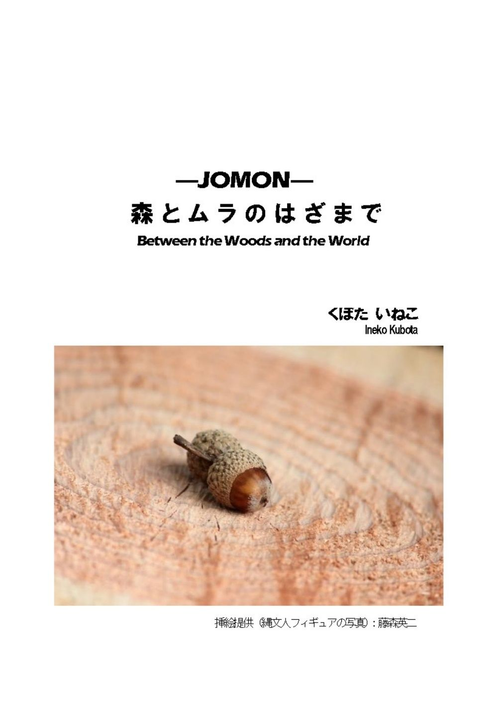
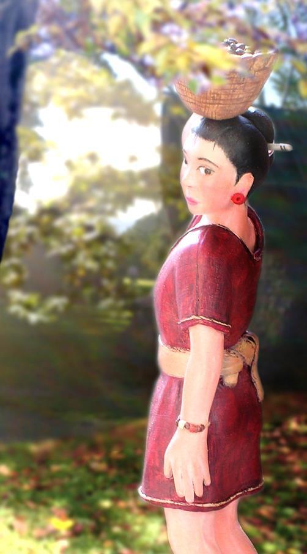
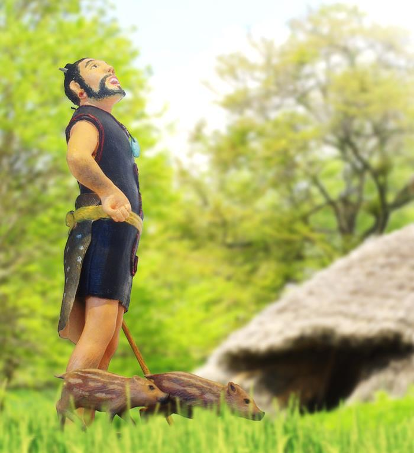
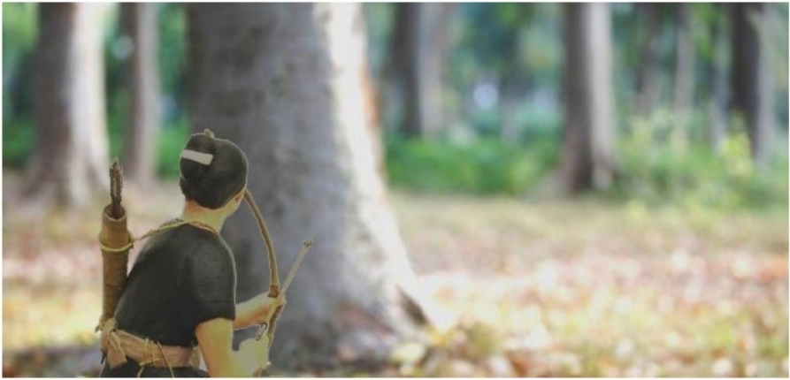
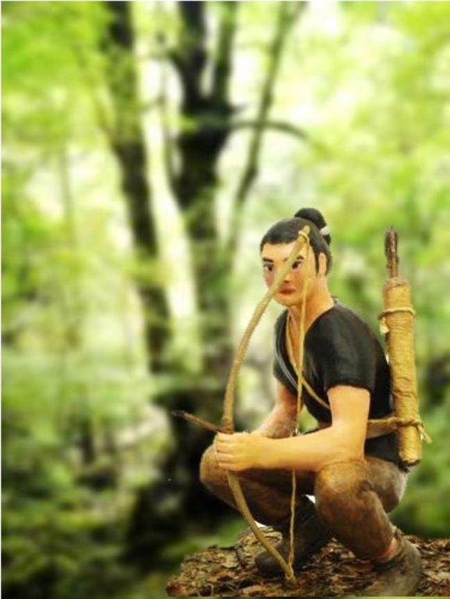
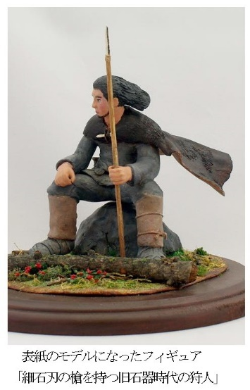

| -JOMON- 森とムラのはざまで (山里の暮らし) | |
| くぼたいねこ | |
| yamasatonokurasi (2019) | |

---JYOMON--- 森とムラのはざまで ------目次
夏の盛りが過ぎたとはいえ、森の中はうっそうとしていた。足早に歩を進めていたハザマは、ただならぬ気配を感じ、ブナの大木に背をあずけた。そっとあたりを探ると、茂った木々の隙間から息をひそめる大きな雄クマが見えた。クマは身じろぎもせずに、一点を見つめている。二十歩ほど離れた視線の先には、若い<二本足>の姿があった。若者は罠にかかったウサギに気を取られ、クマの存在にまったく気づいていない。
こんなところに出くわすなんて......、もう少しでムラに着くというのに。
ハザマは若者を苦々しい思いで見つめた。面倒に関わるのはごめんだとばかりに、その場を離れようとしたそのとき、『いいのか？ ......それで』と、体の内側から声が聞こえた。
それはあの方の声なのか、それとも、おのれの後ろめたさが言わせたものなのか。
分かっていますって。歌うようにつぶやきながら、鞘から黒曜石のナイフを抜き、クマが仕掛けるのと同時に飛び出した。あのバカでかい相手に、正面切って勝てるわけがない。回り込んでクマの背に飛び乗る作戦に出た。
振り向いた若者と目が合った。
「うしろだっ！」
クマは邪魔するなとばかりに体を揺らしてくる。一気にカタをつけなければこっちの身が危ない。それは分かっている。分かっているが、今はしがみついているだけで精いっぱいだ。
石槍を構えて若者が走ってくる。
「喉元だっ！ 喉元を狙えっ！」
若者はなんとも頼りなく、穂先を揺らすばかりで狙いが定まらない。結局、首の脇をかすめて、さらに相手を興奮させただけだった。
怒りの雄叫びを上げたクマは、激しく体を震わせて立ち上がった。背中に張付いていたハザマは、振り落とされて地面に叩きつけられた。
転がるハザマ。
クマは前脚を振り上げた。よだれが飛び散って強烈な臭いをまき散らす。にじんだ視界の中に、太い前脚が迫ってくる。
とっさに身をかわした。
が......、ハザマのわき腹に鋭い痛みが走り、あたりに血しぶきが散った。
視界の片隅に、石槍を手に立ち尽くす若者が見える。このままでは
不気味な笑みをうかべるクマの眼は、赤く濁っていた。相手の恐怖を楽しんでいるのか、今度はゆっくりと前脚を持ち上げた。
なすすべなく、ハザマは頭を抱えて体を丸めた。
山裾に広がる樹海の中に、少しばかり樹々を切り開いた場所がある。 そこは人間が群れを作って暮らす<ムラ>と呼ばれる場所だった。ムラの縁を沿うように流れる川が、森とムラを分ける境だ。境の川には丸木橋が架かっていた。
森のけものたちは<四本足>の仲間と区別するために、人間を<二本足>と呼んでいた。森には<二本足>を獲物にしてはならないという掟があった。
夏草が茂る川辺に、艶やかな灰色の毛並みを持つ若い雄オオカミが立っていた。時々丸木橋までやって来て、ムラの様子を覗き見るのが楽しみのひとつだった。<二本足>の暮らしは奇妙で珍しく、日がな一日、斜面の上から眺めていても退屈しなかった。
こちらにやって来る<二本足>に気づいて、灰色オオカミはそっと茂みに隠れた。
皮袋を手にした<二本足>は若い娘だった。きゃしゃな体つきで、長い黒髪を両脇でゆるく編んでいる。灰色オオカミは、その娘を美しいと思った。
橋のたもとに立った娘は、上流に向かって歌を歌い始めた。少し鼻にかかった独特な声だ。それは川の精に捧げる歌なのか、語りかけるように、同じリズムを何度も何度も繰り返し......。
灰色オオカミは目を閉じて聴き入った。なぜか懐かしく、うずくように胸が痛んだ。
歌い終えた娘は、皮袋に水を満たして帰っていった。満足そうな笑みを浮かべて、川の精が後ろ姿を見送っている。
山や川や樹々......、あらゆるものの中に精霊が宿り、森のあちこちに神々がいる。それは、その姿を瞳に映すことができない<二本足>でさえ知っていることだが、<二本足>が精霊に敬意を表す姿を、灰色オオカミはその時初めて目にしたのだった。
思い切って丸木橋を渡り、ムラ側の岸辺まで行ってみた。娘のいたところは、干草のような甘い匂い残り香がした。川の精の視線に気づいた灰色オオカミは、そしらぬ顔でその場から走り去った。
満月の光に蒼白く照らされた森の中。月の明るさで目が覚めた。
ねぐらにしているブナの大木の洞から外に出ると、空気がひんやりしていた。同じ樹を棲家にしているフクロウの低くこもるような声と、虫たちの求愛の音色が森に響いている。
月を見ているうちに、川辺で聴いた娘の歌声が蘇ってきた。体が熱くなり、なぜか胸が苦しくなってくる。じっとしていられなくなって、灰色オオカミは駆け出した。
ムラが見下ろせる張り出した崖の上からは、裾野に広がる樹海が一望できた。自然と、仲間を呼ぶ声が喉から漏れてくる。繰り返す遠吠えは、耳の奥から聞こえる歌声といつの間にか重なった。長く尾を引くこだまが、山々から戻ってきた。......この声は、あのムラにも届いているのだろうか。
それから灰色オオカミは毎日丸木橋に通った。もう一度あの歌声が聞きたかったからだ。丸木橋が見下ろせる小高い斜面の上に陣取って、娘が来るのを待った。けれど水汲み場に来る<二本足>はまばらで、娘を見かけることなく何日も過ぎていった。
羽虫が鼻先にまとわりつくのもかまわず、うとうととまどろむ昼下がり。待つことも慣れっこになったある日、突然娘がやって来た。灰色オオカミはあわてて潅木の陰に隠れ、どきどきしながら見守った。
森の中に歌声が響き、川の精も前と同じように、満足げな表情で聴き入っている。待ち焦がれた歌声を耳にして、灰色オオカミの胸は喜びでいっぱいになった。
娘が帰ってしまうと、丸木橋を渡って水汲み場へと走った。残り香を嗅ぎ、ムラへの小道を行ったり来たりしながら、強く匂いが残る地面に何度も転がった。灰色オオカミは娘の歌に酔っていた。
水を汲む娘をまねて、水面に口を寄せた。その時、川底からじっと見つめ返すけものの姿に気がついた。
......。膨らんでいた興奮がしぼんでいく。
いつからそこにいたのか、すぐ横に川の精がいた。そっと灰色オオカミの背に手を置き、
「お前は森で生きるものだ。あちら側にお前の居場所はない」と言った。
憐れむような口調に、思わずカッとなった。何をしようとオレの勝手だ！ たとえ川の精でも指図は受けねえ。灰色オオカミは、唸り声で川の精を威嚇した。
そのやり取りを見ていた天の山神は、生意気盛りの灰色オオカミがほほえましく、ふっと笑った。
それにしても、あの娘に巡り合うとは......。
さて、どうしたものか、天の山神は思案を巡らせた。
これも
妙案を思いついた天の山神は、川の精にそっと耳打ち を した。
その日を境に、灰色オオカミは川辺に行くのをやめた。娘の歌などすぐに忘れちまう、何もかも今まで通りだと思っていた。なのに......、いつまでたってもあの声、あの姿が、胸の中に居座り続け、離れようとしない。日々痩せていく月を見上げるだけの、眠れぬ夜が続いた。ある晩、夢の中に川の精が現れた。丸木橋のたもとに立つ川の精は、『天の山神のところに行くがいい』と告げた。
灰色オオカミは、連なる尾根の向こうにある孤高の山を目指して出発した。
地面を這うような、潅木が生えているだけの高地。灰色オオカミは谷あいの滝のほとりまでやってきた。ごうごうと音を立て、岩棚から水が落下している。夕闇が迫る中、白く泡立つ滝つぼだけがはっきり見えた。灰色オオカミが目指す場所は、滝の裏側だった。
意を決して飛び込むと、水は息が止まりそうなほど冷たく、体がしびれてくる。流れに押し戻されながらも、必死で四本の脚を動かし続けるうちに、なんとか滝の真下までやってこられたと思ったら、今度は水がすごい勢いで上から襲ってくる。何かに脚を引っぱられ、渦を巻く滝つぼの深みに引きずりこまれる。滝の精が侵入者を試しているのだ。灰色オオカミは上も下も分からなくなって、ただ四脚をばたつかせるだけだった。
真っ暗な闇の中にいた。しばらくの間、水面に顔が出たことにさえ気づかなかった。知らぬ間に水の壁をくぐり抜けていたのだ。滝の裏側は、外側とはまったくの別世界だった。岩に滴る水音があちこちから響き、岩肌にびっしりと生えた苔で、足元は滑りやすかった。
漆黒の闇に吸い込まれていきそうな恐怖を抱きながら、灰色オオカミは奥へと進んだ。滝の音は少しずつ小さくなって、気づいたときにはもう聞こえなくなっていた。
どのくらい歩いただろう。丸くくり抜かれたような広い空間に出た。天井の岩が、はるか上のほうに見える。中央にある泉が光を放っていて、その場所はほのかに明るく、濡れた岩肌に乱反射した光が神々しいほど美しかった。天界に通じる道があるといわれる天の山。ここはその山の中心にある、天の山神の棲家だった。
静寂の中、突然泉の中央に光の輪が現れた。輪はゆっくり空中に浮かび上がると、次の瞬間、目がくらむほどの強い光を放った。まぶしさに耐え切れなくなった灰色オオカミは、ぎゅっと目をつむった。
再び目を開けた時、その方は泉の上に立っていた。
孤高にそびえる天の山は、美しい火山の山だ。穏やかに煙をたなびかせる日ばかりではない。時には地を揺らし、噴火に荒れ狂い、すべてを破壊してしまう力を持っている。その力には、善も悪もなかった。暴れ山の主、天の山神は、全身から眩い光を放ち、冷たく澄んだまなざしで灰色オオカミを見下ろしている。
「用向きは何か？」
天の山神の声は、思いがけないほど穏やかだった。
『オレを<二本足>にしてください。ムラに住む娘に会いに行きたいのです』
言葉を持たない灰色オオカミは、勇気を出して願いを念じた。
天の山神はふっと笑うと、子どもを諭すような口調になった。
「お前は、オオカミとして命を与えられた。人間に姿を変えたところで、幸せにはなれん。同じ仲間と群れをつくって暮らしなさい」
灰色オオカミはがっかりした。けものの願いなど取るに足らぬとでも言うのか、そんなわかりきった説教を聞くために、わざわざここまで来たんじゃない。思わず胸の中で『くそっ！』と毒づいた。
天の山神はまたふっと笑った。すべてお見通しなのだ。
「どうしても姿を変えたいと申すか？ たとえ人間に姿を変えたとて、たった月ひと巡りだけのこと。その後森に帰っても、前のように暮らすことはできん。お前は森の暮らしからも、人間の群れからも、生きる場所を失うことになる。つかの間姿を変えたとて、その後はどうする？ どこにも居場所を持たぬのは、想像以上の寂しさだ。森で生きよ。それがお前に与えられた命なのだ」
慈しみが込められた山神の言葉も、灰色オオカミの気持ちを動かすことはなかった。オレは誰の指図も受けねぇ。生きたいように生きていく。そうするのが当然だと思った。
「まだ恐れを知らぬか、若者よ......。決して賛成はできぬが、それも覚悟の上だと言うなら、お前が選んだ道だ。好きにするがいい」
哀れむように言った。けれど天の山神は灰色オオカミの覚悟がどれほどのものなのか、まだ計りかねていた。
「......ただし！」
突然、天の山神の表情が険しくなった。
「どんな姿になろうと、お前がオオカミであることは何ら変わらぬ。人間と森に生きるものの掟が変わることもない。その娘をどれだけ想い慕おうが、人間の女にふれることは決して許さぬ。そのことを忘れるな。もし掟を破るようなことがあったら、どうしてくれようか！ ムラも森も......すべてを死に絶えさせてやる。森一面、魂がさまようだけの墓場にしてくれるわっ！
......わたしにとっては容易いことだ。それでもお前の決心は変わらぬと申すかっ！」
射るような視線だった。浅はかなオオカミの空想など見透かしているぞ、とばかりに。
そんなことは思いもしなかった......と言えば、うそになるのか。灰色オオカミは観念して、『掟に背くようなことはいたしません。決して』と誓いを立てた。
手放しで合格とは言えないが、このものに任せてみるとするか。天の山神は腹を決めた。
「心が揺れたら問うてみよ。誇らしいのか、後ろめたいのか。......答えはおのれの中にある。心の声に背を向けてはならんぞ」と、念を押した。
「もうひとつ言っておくことがある。水鏡は本当の姿を映し出す。正体を悟られぬよう、用心せよ」
その声が消えぬうちに、天の山神はまばゆい光となり、灰色オオカミも光に包まれた。
滝のほとりで目が覚めた。朝もやの中、早起きの小鳥たちの囀りが聞こえる。体を伸ばし、身を震わせて起き上がると、体がいつもと違う。掌も、腕も、脚も......、身体のすべてが変わっていた。あちこち目を凝らし、触ってみる。
......昨夜の出来事が甦ってくる。
「お前に名を授けよう、お前の名はハザマだ。森とムラの
天の山神の声がした。
<二本足>になった姿を確かめたくて、岸辺に走った。膝をつき、川面に顔を映してみたが、見慣れたけものが見つめ返しているだけだった。
「水鏡は本当の姿を映し出す。忘れるでないぞ」
声はだんだんと遠ざかっていく。
立ち上がって、体のひとつひとつを動かしてみた。新しい体は隅々まで力がみなぎり、不自由なところは何もなかった。本当にオレは<二本足>になったのか......。信じられない気持ちが先立って、まだ実感がわかない。
足元にナイフと弓矢が置かれていた。鞘に入った黒曜石のナイフ。腕の長さほどの弓。矢筒に納まったハヤブサの矢羽が付いた五本の矢。いずれも美しい装飾が施され、特別にあつらえたものだと一目で分かった。
『お前の牙となり四肢となろう』
声は、体の内側から聞こえてくるような気がした。心使いがありがたく、夕べの生意気な態度が恥ずかしくなった。
「ありがとうございます」
声に出して言ってみた。
さっそく、ナイフで近くの柳の木の枝を一本切り取って、天の山神に手向けるオムベ（※御幣）を作った。不思議と、そうすることで喜んでもらえると分かる。枝の皮をむいて白い肌を出し、一枚一枚同じ幅になるように、ていねいにナイフで薄くそいでいく。オムベは長い房のようになって、ふんわりと風になびいた。
「天の山神さま......」
答えはなかった。オムベを川に流し、祈った。オムベは流れに揺られ、ほどなく視界から消えた。
背に弓矢を、腰に黒曜石のナイフを下げ、身支度を終えて岸辺に立った。大柄ではないが、引き締まった肉体に灰色の毛皮をまとい、髪を無造作に束ねた若者の姿は、どこから見ても<二本足>だった。
天の山を下る途中で、茂みに隠れていた雷鳥を仕留め、腹ごしらえをすませた。ナイフも弓矢も手足のように使いこなせるというのに、<二本足>の体には簡単に馴染めそうになさそうだ。驚くほど動きが鈍いのだ。一日中歩き通して、ようやく住み慣れた森に帰り着いたのは、夜がだいぶ更けた時分なのだから。
張り出した崖からムラを見下ろすと、家々から煙が上がり、広場の隅のほうにも焚き火の炎が小さく見える。不安な気持ちを振り払うように夜空を見上げると、満天の星空なのに月の姿だけが見えず、今宵は新月の晩なのだと気がついた。
ハザマは何度も目を覚ました。
熱にうなされたかと思うと、寒さに震え、はあはあと荒い息を吐いていたことは、ぼんやり覚えている。近くで火が燃えていて、祈りの声が聞こえた。不思議と炎に対する恐れはなく、安全な場所に思えた。苦い湯を飲まされ、また深い眠りに落ちていった。
高い場所から差し込む光で目が覚めた。干し草の上に毛皮を敷いた軟らかい寝床に、毛皮を綴った温かい掛け具の中にハザマは寝かされていた。最初に目に入ったのは煙出しの穴だった。ツンとする燃えさしの臭いがして、人間の棲家にいるのが分かった。うす暗い室内に人の気配はない。寝床の中で体を動かすと、脇腹に鋭い痛みが走り、痛みと共に森でクマと戦った記憶が甦ってきた。
オレはクマにやられて......それから......。
『......！ 』
慌てて体のあちこちを調べた。......どうやらまだ<二本足>の姿でいるらしいと分かって、ハザマはほっとした。弓矢とナイフも枕元に置いてあった。
入り口の垂れ戸が開いて、急に部屋が明るくなった。狭い入り口から、若い女と老婆が身をかがめるようにして入ってきた。急いで、自由になる右手に黒曜石のナイフを忍ばせた。
枕元に座った老婆は、「気がついたかのう」と言った。
老婆の後ろに座った若い女から覚えがある匂いがして、ハザマの心臓が大きく鳴った。老婆と目が合うと、妖怪じみた顔でニヤッと笑っている。
「あ、あんたは？」
「わしは薬師じゃ」
薬師と名乗る老婆の顔は、深いシワが刻まれ、歯は一本もなかった。よく見ると、腕や頬に複雑な模様の入墨が彫られているのだが、それも近くで見なければ気づかないほど、シワとシミに埋もれている。いったいどれくらい生きているのだろう。
ハザマの額から手を離すと、今度は脇腹に貼った湿布を取って調べ始めた。
「もうだいじょうぶじゃ。しばらく大人しくしていれば、じきによくなるでのう」
傷口から顔を上げて言った。
「あんたが助けてくれたのか？」
「わしは手当てをしただけじゃ。あんたを運んできたのはヒビキじゃよ」
ヒビキとは誰だ？ ここは<二本足>のムラなのか？ オレはどのくらい眠っていたんだ。......次々と疑問が湧いてくる。
「あんたの意識が戻ったと、ムラ長に話しておく。この娘はヒナタ。傷が治るまで、お前さんの世話をしてくれる」
臼石で薬草を潰していた娘が、手を止めずに顔を上げた。心臓がまた走り始める。ヒナタは潰した薬草を軟らかい皮に塗って、湿布を取り替えた。薬草は傷口に沁みて、ハザマは体を固くして痛みに耐えた。
手当が終わると、ふたりは出て行った。
こんなにすぐにあの娘に会えたことが信じられず、ここは死者の魂が帰るという<魂の里>なのかもしれないと思った。オレはクマに殺られて死んでしまったのか......。あたりを見回しながら考えた。
小屋の中は、中央に間隔をおいて炉が二つ切ってあり、ほとんどの場所で大人が立って歩けるほど天井が高く、広い空間だった。丸太に足掛けを彫り込んだ梯子で屋根裏に上がれるようにまでなっている。炉を隔てた反対側の壁には、たくさんのオムベが立てかけてあり、棚には頭が付いたままのクマの毛皮や、土製の女神像が祀られていた。そこが神聖な場所だということはハザマにも分かった。
ここは<魂の里>なのか、それとも崖の上から見ていたあのムラなのか......。天井も壁も、束ねた草が隙間なくぎっちりと結わえてあるし、ひとつしかない出入り口の垂れ戸も今は閉まっている。小屋の中を見渡したからといって、答えは何もない。ハザマは考えることを諦めて目を閉じた。
人の気配で目が覚めた。炎が上がった炉から、ヒナタが顔を上げた。今度はひとりだ。手を借りて起き上がると、湯気の立つ椀を渡してくれた。芋や肉、香りのいい葉を軟らかく煮た汁を、ハザマの空っぽの胃袋は喜んで受け入れた。空の椀を返したところで、初めてヒナタが口を開いた。
「ムラ長があなたに会いに来ています」
入り口に向かって声をかけると、ふたりの男が入ってきた。ヒナタは茶の支度を済ませ、黙って出て行った。
先に入ってきたのは、がっちりとした体格の中年の男だった。両頬に横一文字に通る入墨があり、クマの牙を連ねた首飾りをつけている。この男がムラ長だろうと見当がついた。もうひとりは見覚えがある若者だった。
ハザマの向かいに座った男には、強い意志を感じさせる独特な存在感があった。若者はムラ長より少し後ろに、並ぶように座った。ふたりは両手の平を天に向けて、相手に無防備なことを知らせるしぐさで挨拶した。ハザマもふたりを真似て挨拶を返した。
「意識が戻ったと聞いて安心したよ。気分はどうだね？」
男は感じのいい笑顔を向けた。
「ワシはムラ長のイッテキだ。こちらはヒビキ。そなたが助けた男だ、覚えているだろう。そなたのおかげで、ムラの大事な若者を失わずにすんだ。まずは礼を言わせてくれ」
ふたりはしぐさで感謝を表した。<二本足>の穏やかな態度は、ハザマの気持ちを少し楽にした。
ムラ長の後ろから、ヒビキという男が口を開いた。
「本当なら、今頃おいらは死んでいたか、深い傷を負っていた。それなのに、おいらが無傷であんたが痛手を負うことになるなんて。なんていったらいいか......、本当にすまない！」
若者は小柄だが、年頃はハザマと同じくらいのようだ。
「いや、あんただけでも無事で良かった」
ハザマはムラ長のほうに向き直った。今度はこちらが話す番だ。
「オレの名はハザマ。北の白い山並みの向こうで暮らしていたが、今は旅をしている。野営した岩陰から出発して間もなく、あのクマに出くわした。人食いをする森の生きものがいると聞いてはいたが、まさかオレがその場に出くわすことになるとは......」
ムラ長は何ひとつ見落とすことなく、オレを観察しているだろう。天の山から下る間に考えておいた話を、ハザマは注意深く続けた。
「連なる峰々の向こうに、大地と天界をつなぐ偉大な神の棲む山があると噂に聞いていた。あれは月ふた巡りほど前の、夏の盛りのころだった。夢枕に現れた娘が、美しい歌声でオレを呼ぶんだ。娘の背後に、煙を上げてそびえたつ孤高の山が見えた。夢告げを受けたと確信したオレは......」
「その旅の途中だったと......」
口を挟んだムラ長に、ヒビキが声をかけた。
「天の山ですね。でもこの体では......」
分かっているという風にムラ長はうなずいた。
「まず体を癒すことが先決だ。あんたの魂は三日もさまよっていたんだからな。天の山のことはケガが治ってから考えればいい」
ハザマはずっと熱にうなされたまま、三日間眠っていた。傷口から入った悪い霊が、体の中で暴れまわっていたのだ。まじない師の祈詞と介抱のおかげで意識が戻ったと、話してくれた。
ムラに来た旅人のことは、だいたい分かったと判断したのだろう。「ゆっくり休んでくれ」と言って、イッテキが立ちあがった。ヒビキははにかむように笑い、「また来る」と言った。ふたりが出て行ってしまうと、小屋の中はガランとして、前よりもっと広く感じた。急に疲れを感じて横になった。病み上がりの上に、初めて<二本足>と向かい合ったのだから。
あれから三日も眠っていたとは......、貴重な時間を無駄にしたのか。いいや、不思議な巡り合わせに感謝しても良いくらいだと思った。ハザマは親の群れから離れ、独り立ちした頃のことを思い出した。しばらくの間は、一緒に生まれた兄弟三頭で行動を共にした。力を合わせて狩りをし、夜は体を寄せ合って眠った。だが、体の小さい兄弟は、仔鹿を追っているときに、母鹿から受けた一撃で命を落としてしまった。その後オレたちは、二頭で冬越しした。暖かくなると残った兄弟は、若いメスを追ったまま戻らなかった。それからずっとひとりだ。ひとりで生きるのにはもう慣れていた。
今日はたくさんの人間に会った。ヒナタに薬師のばあさん、それからムラ長とヒビキ。なんだか新しい群れに迷い込んだような、不思議な感覚だ。......ともあれ、ヒナタのムラにいられることを喜ぶべきだろう。とりとめなく、いろんなことに想いが馳せていった。
微熱のせいで、眠ってばかりいた。いつ入って来たのか、ヒナタがそこにいた。ハザマは夢うつつのまま、炉で火を熾すヒナタをぼんやり目で追った。手当ての道具を手にこっちにやってくる。炎が立ちのぼり、ヒナタの影がゆらゆらと浮かび上がる。濡れた大地のように艶のある肌、黒目がちな瞳。後れ毛のかかる滑らかな頬......。すぐそばにあの娘がいる。これは夢なのか......。そっと彼女の頬に手を伸ばした。
ヒナタはすっと身をかわし、ハザマから離れた。
ハッと我に返った。
ふたりきりの小屋の中に気まずい空気が流れ、ヒナタは無言のまま出て行った。
おのれの軽率さに腹が立たった。そういえば、人間の女にふれてはならないと、天の山神に命じられたではないか。掟を守ると誓った。誓ったけれど......。本当に約束を守り通していけるのか、ハザマは不安になってきた。瞼を閉じると、厳しい表情の天の山神が現れた。
分かっています。分かっていますとも！ いったい誰に腹を立てているのか分からないまま、胸の中で思いつく限りの悪態を叫んだ。
目を開けると、小屋の中は煙出しの穴から差し込む光だけの薄暗い空間に戻っていた。
次の日、さっそくヒビキはやってきた。
「具合はどうだ？」ハザマが起き上がるのに手を貸したあと、昨日イッテキが座ったあたりに腰を下ろし、照れたように笑った。
「あの時おいらが、<トラワレ>を仕留めてさえいれば......」
「とらわれ？」
<トラワレ>とは、邪な神に魂を奪われてしまった生きモノのことで、このあたりの森をうろつくあのクマも、力の弱い女や子どもを狙っては食らう<トラワレ>なのだと。近くのムラでも何人も襲われているのだと話した。
「あいつがいなければ、今ほど用心しなくとも、みんな森に入れるのに。狩人総出で山狩りしても、ずる賢くて決して姿を現さないんだ」
ヒビキはいかにも残念という顔で、あのクマはおいらが追っぱらったと言った。
「あんな大きなクマを一撃で倒すなんて、簡単なことじゃない。急所を射抜けば話は別だが」
この若者がクマを仕留めるだけの腕を持たないのを、ハザマは見抜いていた。あんな槍使いで本当に追いはらえたのかも、怪しいものだと思った。
森には人間を獲物にしてはならないという決めごとがあった。オオカミの中にも、怪我をしたり年老いたりして獲物が捕れなくなると、飢えに負けて人間を襲うものがいる。だからクマの世界にも、掟に背くものがいても不思議はない。人間は森の生きものを狩って、肉を食べる。毛皮や骨も道具に使う。その代わり、獲物の魂に感謝を表す儀式を行って、<魂の里>に送り出してくれると聞く。だから<二本足>は特別なのだと。人間を殺したけものは<魂の里>には帰れず、湿った地中奥深くに閉じ込められてしまうと聞いたことがある。
本当にそんなことがあるのだろうか......。ぼんやり考え事をしていたハザマに、ヒビキが話しかけた。
「これは狩りに使う道具なのかい？」
枕元にある弓矢を指して尋ねた。
「えっ？」我に返った。
......この男が弓矢を知らないのは意外だった。オレは初めから当たり前のように使っていた。だから、当然人間の使う猟具だとばかり思っていた。
ヒビキは返事を待っている。
「そうだ。狩りに使う道具だ。これが弓でこっちが矢だ」
ヒビキは身を乗り出した。
「こうして使う」
矢を番えて弓を構え、入り口のむこう側の壁めがけて放った。傷が痛むので力を加減したが、それでも草を束ねた壁にブスリと刺さった。
ヒビキは目を見張った。
「へぇぇー。こんなことで遠くまで飛ばせるなんて！ 考えたもんだ。これはあんたが作ったのかい？ すごい技をもっているんだな」
あこがれるようなまなざしを向けた。
「オレは道具作りは得意じゃねえ。これは特別な方から授かったものだ」
「特別な贈りものか。どうりで......」
美しい細工に目を凝らし、感心している。
「弓矢を使えば、二十歩以上離れた場所からだって獲物を狙うことができる。急所を射抜きさえすれば、あのクマだって仕留められるぞ」
矢を取りに立ったヒビキは、まさか、という顔をした。
「むろん、狙った場所を確実に射抜くだけの技があっての話だ。ケガが治ったら、あんたにオレの腕前を見せてやる」
オレにとっては容易いことだと言わんばかりに、胸を張った。
深く壁に刺さった矢を目の当たりにして、さっきの話は大げさではないのかもしれないとヒビキは思った。
「......」
矢を手に戻ってきたヒビキは、戸惑いを隠して口を開いた。
「これを使ったら、おいらでも二十歩以上離れた場所から獲物を仕留められると思うか？」
ハザマは返答に困った。簡単にできる、できないと、言えるものではないからだ。
「悔しいが、おいらは有能な狩人とは言えない。あんたも見ただろう、おいらの槍使いを。<トラワレ>を追っぱらったなんて言ったけど、本当は、アイツの方から狩りを諦めたようなもんなんだ......」
背後から<トラワレ>を槍で突いたことは突いたが、大した痛手は与えられなかった。それなのにヤツは、急に戦意をなくして去って行ったと、苦笑いで打ち明けた。
「狩りは苦手だ。体の小さいおいらは、力も弱い。でもな、物作りなら自信がある。なあハザマ、あんたに頼みがある。この弓矢を手本にさせてくれないか？ これと同じものを作って稽古すれば、おいらだって......」
ヒビキの言いたいことは分かった。分かったが、ハザマは納得できなかった。特別な力があると言われる人間が、弓矢も知らないなんて。それにおのれの武器をさらすなど、相手に手の内を教えるのと同じじゃないか。どうしてそんな危険を冒さなきゃならない。
ハザマは首を振った。
「......そうか」
立ち上がったヒビキはハザマの肩に手を置いて、「また来る」と言って出ていった。
ヒナタが明かりを灯した火皿を手に、湯気の立つ椀を持った少女を連れて入ってきた。うとうとしていたハザマの眠気はいっきに吹き飛んだ。てっきり、もう来てくれないものと思っていた。
「ヒビキの妹のタニシよ」
少女は、ヒナタの後ろに隠れるようにしているが、背中越しにチラチラとハザマを覗き見ている。手当を終えたヒナタに促されて、昨日より大きな夕げの椀を渡してくれた。それだけで十分精がつくのに、今日も次の椀を渡された。苦い薬湯を、顔をしかめて飲む姿がおかしいのか、タニシがくすくす笑っている。
ヒナタは必要なこと以外は口を開かないし、凛としていて近寄りがたい雰囲気がある。けれど、今日のタニシに向けるまなざしや態度を見ていると、違う一面もあるのだと知った。タニシのおかげで小屋の中に緊張感はなく、穏やかな空気に包まれた。
翌朝もヒナタはタニシを連れてきた。火を熾しているヒナタの背中にまとわりついているが、今朝は、ハザマと目が合うとはずかしそうに笑った。傷口をかばいながら体を起こすと、ヒナタが振り返った。彼女の表情からは何も読み取れなかったが、ふたりとも昨日よりくつろいでいるみたいだ。
「よく眠れた？」
手慣れた手つきで湿布をはがす。
「ああ、夕べは痛みで目が覚めることもなかった」
「......」
ヒナタは傷口を調べている。
「すごい回復力ね！ 傷口がこんなに小さくなって。悪い霊は出て行ったわ。熱もすっかり下がっている」
ヒナタが安堵しているのが分かった。ハザマに言わせれば治りが早いのは当然だった。森にいれば傷口を舐め、ねぐらで丸くなっているだけだ。狩りにも出られず、すきっ腹を抱えたまま眠るしかない。ここでは、心地良い寝床に温かい汁、薬草に薬湯、これで治らぬはずなどない。もっとも薬湯なしでも、十分元気になれる自信はあるのだが。その上、ヒナタがそばにいて面倒を見てくれる。これ以上恵まれた環境などあるはずがない。ハザマはヒナタを熱い想いで見つめた。
「あんたのおかげだ」
ヒナタは視線を避けるように、目を伏せた。
「あたしはヤツデに言われた通りにやっているだけです。彼女はムラの薬師であり、まじない師なの。あなたがうなされている間、ずっと呪文を唱えて悪い霊と闘っていたのよ。
それから、ヤツデが外に出られるようになったら、小屋に訪ねて来るようにって言っていたわ」
ドキッとした。あの何もかも見透かすような老婆の顔が浮んだ。思えば、もう何日も外へ出ていないのだ。小屋の外は？ 他のムラ人たちは？ オレはまだ何も知らない。そう考えると、外に出るのが恐ろしくなった。不安を打ち消すように、「オレなら、今からだってかまわねえ」と強がりを言った。
「気が早いわね。もう一日、おとなしくしていてください。それに、あなたの胴着は修理中よ。ひどく傷んでいたから」
用事は済んだというように、ヒナタは立ち上がった。枕元には、朝げの汁と薬湯の椀が置いてあった。
「......ヒナタ」
彼女の背に声をかけると、振り返って、問いかけるような目でハザマを見た。
「その......あんたに礼が言いたくて......」
「あなたはヒビキの恩人よ。あたしのほうこそお礼を言うわ。ヤツデには明日と伝えておくけど、良いかしら？ もう一日大人しくしていてくださいね」
薬湯の椀を指さしてそう言うと、タニシを連れて出て行った。
夕方、ヒナタとタニシは、ハザマの胴着を持った女を連れてきた。女はヒビキの母親で、シダと名乗った。
シダはハザマの手を離そうとせず、感謝の言葉を繰り返している。見かねたヒナタが、胴着を渡すよう促してくれた。
クマの鋭い爪に引き裂かれた胴着は、思った以上に傷んでいたが、別の皮で裏当てして、表から分からぬように、丁寧に直してあった。袖を通すと、体の中から力が湧いてくるのを感じた。もう外に出るのも怖くない。やっと、おのれを取り戻した気がした。
シダは何度も礼を言って小屋を出て行った。大げさに思えるほどの態度に戸惑っていると、「息子を助けてくれた人ですもの」とヒナタが言った。おかげで外に出る不安はずっと軽くなったし、おのれの行いが誇らしく思えた。
陽はとうに暮れていたが、外の様子が知りたくて、思い切って垂れ戸を押した。
おもての空気を吸うのは何日ぶりだろう......。ひんやりとした柔らかい風が気持ちよかった。空には半分に膨らんだ上弦の月が浮かんでいる。点々と建つ小屋が、月明かりに蒼く浮かび上がって見える。広場の向こうで何人かが焚き火を囲んでいるらしく、炎の明かりと共に、話し声や笑い声が風に乗って聞こえてきた。
小屋の壁にもたれたまま、ハザマは月を見上げた。天の山神の元に向かった日を、ずいぶん前のことのように思い出しながら。
外は秋晴れの透明な光に包まれていた。薄暗い小屋の中で何日も寝ていたハザマは、太陽に背を向けて明るさに目が慣れるのを待たねばならなかった。気が重く、外の景色を楽しむ余裕などなかった。相手はまじない師なのだ、オレの正体など簡単に見抜かれてしまうかもしれない。ハザマはそれが怖かった。
ヤツデの小屋は、ムラはずれの山際にあった。初めてヒナタを見かけた丸木橋のすぐ近くだ。
久しぶりに外に出たハザマに、急な坂道はきつかった。始めのうちは足元がふらついて、宙を歩いているような頼りなさを感じたが、一歩一歩進むにつれ、体に感覚が戻ってきた。ゆっくりと、踏みしめるような足取りで登って行った。
ヤツデの小屋は古く、屋根を覆っている茅には、草や苔がびっしりと生えている。離れた場所から見れば、こんもりと土を盛っただけの塚にしか見えない。ハザマは腹を決めて、入り口の垂れ戸を引っかいた。中から「おはいり」と、しゃがれた声が返ってきた。
ムラの建物はどれも入口が狭い。体を縮めて這うように入ると、傷口が痛んだ。中は外の地面より数段低く、想像したよりずっと広かった。炉を中心とした卵のような丸い形の床に敷き詰められたゴザの上には、雑然と暮らしの道具が置いてある。
ヤツデはぽつんと座って、臼石で何かを磨り潰す作業を続けたまま、顔も上げずに手振りで炉辺に座るように命じた。
床や棚には大小の壺がいくつも置かれ、壁や炉棚には、薬草や蛇の皮や抜け殻を束ねたもの、鳥の頭や脚のほか、干からびて元が何か分からないものまでが吊り下がっている。薬に使うのかまじないに使うのか知らないが、小屋の中は不気味で、鼻につんと来る独特な臭いがした。
人間はみんなこんな暮らしをしているのだろうか。物珍しく見回すと、入り口の柱に、手も足も尾もついたまま頭を垂らし、古びた毛皮と化した小さなけものを見つけた。
......まさか、生きたままで？ これは何かの罰なのか。吊るされたまま干からびていくおのれの姿を想像して、ぞっとした。それが薬師だけが持つカワウソの薬草入れだと知るまで、漠然としたハザマの不安は消えなかった。
「具合はどうかの？」
ヤツデは臼石を後ろに押しやり、炉をはさんでハザマと向かい合うように座り直した。老婆はハザマの顔を見るなり、歯の無い口を開けてニヤッと笑った。それから炉の湯を椀に取り、香りのいいお茶を出してくれた。
「飲めば気持ちが落ち着く」
年寄りは咳払いをした後、「ケガの具合はどうじゃの？」と、もう一度聞いた。
「オレが眠っている間、あんたがずっと祈ってくれたと聞いた。ヒナタはあんたの言いつけ通りに手当していると言った。こうして元気になったのは、あんたのお陰だ」
覚えたての敬意を表す言葉やしぐさで、丁重に礼を言ったつもりだった。
小さな体を丸めて、クックッと体を揺らすヤツデを見ていると、気の良い老婆と話しているような錯覚におちいりそうになる。
「ヒナタはもう一人前じゃ。秋のまつりの儀式を経て、正式にムラの薬師になることが決まっておる。ワシは何もしとらんよ」
「しかし、悪い霊を追っ払ったと......」
「それ以上に、お前さんの強い生命力が、回復を早めているんじゃろう」
老婆は再び、ニタッと笑うと、何気ないおしゃべりでもするように、
「ムラに何者かが訪ねて来ることは分かっとった。このムラに何の用じゃ」と言った。
ハッとした。返す言葉がみつからず、ただヤツデの顔を見つめ返すしかなかった。
「お前さんが運ばれる前の晩、ムラの守り神のフクロウが知らせてくれたんじゃ」
「......」
「守り神のフクロウは、『その者は天の山神の許しを得てムラを訪ねてくる。月ひと巡りの間、ムラに置いてやってくれ』と言った」
ヤツデは確かめるような視線を送った。
「それは何者か、ムラに何用か......と尋ねたが、その問いには答えず、『天の山神のお考えを
まじない師は、次はお前の話す番だと言わんばかりに、炉辺にあった棒切れで燠をつついたきり黙り込んだ。
素性がバレていないと分かって安心したハザマは、ムラ長に言った通りのことを話し、「オレはただの旅人だ。天の山神のことなど何も知らねえ」とシラをきった。
黙って聞いていたヤツデは、不意に顔を上げた。
「お前はどうしてあの娘に心を奪われたんじゃ？」
「え......」
このばあさんはオレを試しているのか......。いったいどこまで知っているんだ......。ほっとしたのもつかの間、再び不安が押し寄せてきた。これ以上作り話で通せまいと観念し、偶然水汲み場でヒナタの歌を聴いたと、しぶしぶ打ち明けた。
老婆の瞳は、ハザマの表情の変化を楽しむように笑っている。
「あの娘の歌には特別な力がある。本人はまだ気づいておらんが、いずれ花開く時が来るじゃろう」
突然、炉の炎が赤々と燃え上がった。びっくりして顔を上げると、老婆の影が壁に大きく浮かび、揺れている。
「お前に言っておくことがある」
低い声が部屋中に響いた。さっきまでの気のいい老婆の面影は微塵もなく、別の生きもののように強い霊気を放っていた。
「決してあの娘にふれてはならぬ！ ......ワシの言いつけが守れるか」
「な、何のことだ......」
平静をよそおうハザマに、まじない師は心の中まで見透かすような鋭い目を向けた。
「万が一でも言いつけに背くようなことがあれば、ただでは済まぬ。ムラもお前も破滅じゃ。そしてもっと恐ろしいことが起きる。よいか、このムラに災いを招くようなまねは決して許さん！」
まじない師は
「約束する。誓ってもいい」
ハザマの精一杯の答えだった。
まじない師は口の中で、ずっと呪文を唱え続けている。
ハザマに邪な心がないことを確かめると、ようやく席を立つ許しがおりた。挨拶を済ませて小屋を出ようとすると、
「天の山神が、なぜこれを遣わされたのか......。ワシのような者に分かるはずもないが、天界と地上をつなぐ神様のお考えじゃ。悪いことであるはずはあるまい」
肩越しに振り返ると、小さな老婆がひとりごちていた。
息が詰まりそうな、まじない師との時間から解放されたハザマは、秋晴れの青く高い空を見上げた。まじない師にどれほどの力があるのか知らないが、今日のところは何とかやり過ごした。ハザマは大きなため息とともに、胸の中のもやもやを吐き出した。
坂の上から見渡すと、陽を受けてキラキラ光る無数のトンボが、一面に舞っている。山や森の樹々の色は鮮やかさを増し、知らぬ間に秋が深まっていた。胸いっぱい清々しい空気を吸い込むと、<二本足>のムラを歩いていることを忘れるほど気持ちが和らいでくる。
広場を囲むように輪を作って立つ五本の柱が真っ先に目に入ってきた。太く高い柱は、強い存在感があった。ムラの建物はみな、中央にある丸い広場を取り囲むようにして建っている。大小の家々がある中で、ハザマが寝泊りしている小屋が一番大きかった。
ムラの中に人影はなく、遠くから声が聞こえてくる。
ハザマが寝ていた小屋の裏手には、栗やどんぐりの実の生る木々の林があった。人間は食料にする木の実を、身近で採れるように工夫をしているのだ。林のほうから子どもの歓声が聞こえてきた。近くまで行ってみると、子どもたちが、おしゃべりしたり、歌を歌ったりしながら、木の実拾いをしている。
声に誘われるまま歩いていくと、幼い男の子がハザマに気づいて顔を上げた。とたんに甲高い警戒音を発した。子どもたちは一斉に走り出し、やぶや草陰に隠れてしまった。......まるで森の仔鹿みたいだ。
静まり返った林の中に、大柄な男がふっと現れた。
「お前は誰だ？」男は腰のナイフに手をかけた。
どう答えたらいいのか......。うっかり子どもに近づいたのは、まずかったか。
そこに、栗の実でいっぱいになったカゴを抱えた少女がやってきた。彼女はきょとんとした顔で、ハザマと男を見比べている。
「タニシ、お前この男を知っているのか」
少女は、こくんとうなずいた。「この人は、森で兄さまを助けた人よ」
「お前の兄貴とムラ長を呼んできてくれ」
タニシはカゴを置いて駆け出した。
翌朝、ヒナタの手当てが終わらぬうちに、ヒビキがやってきた。ムラを案内してくれると言う。
「みんなにお前を覚えてもらわないとな」
朝げの汁を済ませてから、ふたりはそろって外へ出た。昨日と同じように、ムラの中はがらんとして人影はない。みんな河原に行っているらしく、そっちの方から賑やかな声が聞こえてくる。広場を横切って歩いていく間に、狩人たちが使う<男たちの場所>や、男の用足し場、炊事場などそれぞれの場所、タブーやしきたりなど、ムラで暮らす上で知っておくべきことを教わった。
炊事場の横には、河原に向かう二本に枝分かれした道があった。上流側が暮らしに使う水汲み場で、下流側が洗い場だ。丸木橋のたもとにある水汲み場は、儀式や薬に使う水を汲む、<上流の水取り場>と呼ばれる特別な場所だった。ハザマはそこでヒナタを待っていたのだ。どうりで何日も来ないはずだ。
河原の作業は水汲み場と洗い場の間で行われていて、みんな忙しそうに働いている。人間の営みは奇妙でおもしろい。水辺に近づかないように気をつけながら、その様子を眺めた。男たちは、栗やどんぐりの入った重そうなカゴを運び、川に沈めている。大きな土釜で木の実を茹でたり、水にさらしたりするのは、女の仕事のようだ。男も女も、あわただしく行き来していた。
「今は冬越しの準備で一番忙しい時なんだ。たくさん蓄えておけば安心して冬が越せるからな」
ヒビキの表情は、今年の恵みが豊かだと語っていた。
ヒビキが「仕事に戻る」と言って、土手のほうに行ってしまったので、ハザマは昨日子どもたちがいた林の方に行ってみることにした。
子どもたちは、昨日より林の奥にいた。しゃがみこんで、落ち葉の中のどんぐりを無心で拾う子や、走り回っている幼い子。それを叱る年長のリーダー。思い思いに過ごす子どもたちに、秋の柔らかい陽射しが降り注ぐ。
子どもたちがハザマに気づいて顔をあげた。みんなの緊張が伝わってくる。
やっぱり戻ろうか......。迷っているところにタニシがやって来た。ハザマのことは少女が語ってくれた。
「寄合小屋で、けが人が寝ているのはみんな知っているでしょう。この人は人食いのクマと戦って大けがをしたの。こうして外に出られるようになるまで、ヒナタとあたしがお世話したのよ」
タニシには、いつものはにかむような表情はなく、堂々としていて誇らしげだった。少女もまた子どもたちのリーダーなのだろう。彼らの手本になるよう、振舞う姿が微笑ましかった。
「あぁ、お前さんとヒナタのお陰だ」
タニシの肩に手を置いてそう言うと、少女はうれしさで鼻をふくらませた。子どもたちの顔から不安の
色が消えたのを確かめてから、ハザマは一緒に木の実拾いをさせてくれないかと頼んでみた。寝ているのはもう飽きたが、河原の近くにはいられない。それに、子どもといるほうが気が楽だった。
どうする？ と言うように子どもたちが顔を見合わせた。
「えぇ！ へんなのぉ------。木の実拾いは子どもの仕事だよ！」
小さな子の言葉に、みんながどっと笑った。つられてハザマも笑った。
「オレは外に出たばかりだ。みんな、オレにムラのことを教えてくれねえか？」
大人びた笑顔でタニシがカゴを渡してくれた。子どもたちは受け入れてくれたが、遠巻きに様子を伺う大人たちの視線には気づいていた。
木の下に座って、木の実を拾い始めた。最初は珍しげにハザマを取り囲んでいた子どもたちだが、しばらくすると、それぞれの持ち場に戻って行った。ハザマがいることに慣れてくると、歌や遊びを交えた競争で、たいくつな仕事を楽しみに変える子どもの才能を発揮し始めた。子どもたちのかわいい態度やしぐさを見ると、独り立ちする前に巣穴に生まれた妹弟を思い出す。
タニシが世話を焼きながら、次々といろんなことを教えてくれる。ハザマのいる小屋は寄合小屋と呼ばれ、まつりや共同作業の時にみんなが集まる場所であり、他のムラから来たお客さんや、旅の交易商人の宿にもなるのだと。寄合小屋の屋根裏や貯蔵倉、それぞれの家にまで、冬越しの木の実を蓄えておくのだと話してくれた。
「冬の間に食べる分は、河原であく抜きをしてからしまっておくの」
タニシは大人びた口調でしゃべり続けている。
またこの子に助けられた。ハザマは心から少女に感謝した。
木の実を拾う場所は、毎日少しずつ森の方へ移動する。日に日に、ムラと森の境に近づいていく。この季節は森の生きものにとっても、たくさん食べ物が必要な時期なのだ。近くに人食いクマが潜んでいないとも限らない。あの赤く濁った目を思い出して、ハザマは何も悪いことが起きぬよう願った。
穏やかなムラ人たちは、冗談を言い合ったり、仕事の手を休めずに声を合わせて歌ったりして、大人までが労働を楽しいものに変えていた。ハザマはヒビキを助けた男として一目置かれてはいたが、よそ者には変わりなかった。初めはよそよそしかったムラ人たちだが、毎日収穫の作業を手伝ううちに、少しずつ親しくなっていった。炊事場の近くで、ヒナタが茹でたドングリを広げている。視界の中にヒナタがいるだけで、ハザマの胸は躍った。
ヒナタは傷口を調べながら、「もうあたしの手当ては必要ないわ」と言った。ハザマ自身、この日が近いことは覚悟していた。介抱が終われば、ここに来る必要もなくなる。ヒナタが小さな皮の包みをくれた。中身はクマの脂と薬草を練って作った軟膏で、塗っておくと傷口が乾かないと言った。確かに傷口が乾くと、引きつってとても痛いのだ。でも今は、傷口よりも痛い場所がある。黙って包みを受け取る意外、何もできないのか。言葉を交わせるのも、これが最後かもしれないのに。しばしの沈黙の後、今日まで世話になったと礼を言った。そして、「毎日あんたが来るのが、楽しみだった」と、控えめな告白をした。
ヒナタは目を合わせようとはしなかったが、「元気になって良かったわ」と言ってくれた。

ハザマはもう少し、ヒナタと話していたかった。
「あんたは今度のまつりでムラの薬師になるんだろう。それなのに、みんなと同じように収穫の仕事までやらなくちゃいけねえのかい。みんなはもっと、あんたを大事にするべきだ」
ねぎらいの言葉をかけたつもりだった。
「そんなことは、あたしの望みじゃないわ。あなたには分からないかもしれないけど」
何か言葉にトゲがある。
「冬越しの食べ物がなければ、飢え死にするだけよ。そこで薬師が何の役に立つというの？」
感情を押えるような言い方が気になる。
「あたしたちは、弱い生き物。互いに与え合うことで命を繋いでいる。薬師の知恵も、狩人が獲物を捕らえる技も、石斧を加工する技術も、一粒の木の実を拾う子どもの指先ですら、独り占めして生きられるほど強くはない。......あたしは特別扱いしてほしいなんて、思ったこともないわ！」
ヒナタは投げつけるように言い放ち、小屋を出て行ってしまった。
オレは優しい言葉をかけたかっただけなのに、いったい何がいけなかったのか......。ハザマはがっくりと肩を落とした。
あれからヒビキは、毎晩のようにやってきた。協力を拒んだことを気にする様子もなく、弓矢作りはあきらめないと言った。
ハザマは、率直でまっすぐな性格のこの男が好きになった。ムラの暮らしが楽しいものになったのは、この男のおかげだ。彼は特別な友達だった。兄弟と離れてからひとりで生きてきたハザマには、長いこと忘れていた喜びだった。
ヒビキは収穫の合間に、弓に使えそうな枝や、矢柄にする竹を集めては、材料を水に浸けたり、火にあぶったり、けもの脂を塗ったりと、試行錯誤を繰り返した。あれこれ試すのが楽しくて仕方ないらしく、今夜も炉辺の灯りで、弓のしなり具合を確かめたりしている。
「収穫が終わったら、次は矢尻作りだ」
ヒビキの期待が伝わってくる。
「おいらはこうして手仕事をしている時が一番楽しい。ナイフや石斧作りは特に、やりがいを感じる。
......狩りは苦手だ」
小柄なこの男にとって、一人前の狩人として認められるのは簡単ではなかっただろう。槍で獲物を仕留めるには、技と力両方が必要だ。ヒビキが狩りより物作りを選ぶ気持ちは理解できるが、弓矢で腕を上げれば、今よりずっと狩りが好きになるはずだ。
ひとりひとりが、できることをするだけ......か。確かにヒビキの行いも、ヒナタの言葉通りなのだろう。考えてみれば、オレはここに戦いを挑みに来たわけじゃない。弓矢を見せるなんて、何でもない事だったのかもしれない。そう思う時もあったが、ひとりで生きる厳しさを身に染みて知っているハザマには、きれいごとだけじゃ生きていけねえ、というのが本音だった。
どんぐりの森に行き始めて数日後、木の実の収穫と貯蔵作業は終わった。その間に、子どもから年寄りまで、二十人ほどのムラ人ほとんどと、顔見知りになった。
貯蔵倉や寄合小屋の屋根裏、家々の炉棚の上にまで、入るところすべてに木の実を詰め込んで、残りは河原の土手に穴を掘って蓄えた。人間たちの冬越しの工夫だ。ムラ人たちは疲れ以上に、ほっとした表情を浮かべ、話題は次の満月の夜に行われるまつりの事でもちきりになった。まつりの食卓を彩るきのこや魚、山菜や木の根を採りに、山やら川やらへ出かけるのをみんな楽しみにしていた。
あっという間に満月の夜がやってくる。ハザマは過ぎゆく日々から目をそらすように、話の輪に加わった。
朝、迎えに来たヒビキと<男たちの場所>へ向かった。そこは狩りの練習や猟具の手入れをする、男だけが使う場所だった。
<男たちの場所>はムラの東側にあり、女たちが月の日や出産の時を過ごす<女たちの場所>は、西側にあった。
狩りの稽古をする開けた場所と、簡素な小屋があるだけの<男たちの場所>に対して、<女たちの場所>は、しっかりとした造りの小屋が、大きな樹々に守られるように建っている。そこは男が立ち入ってはならぬ場所のひとつだった。
「今日は矢尻作りだ」
ヒビキは手にしていた皮袋を持ち上げた。弓はほとんど完成し、矢柄に使う
<男たちの場所>では、シブキがひとりで石斧の刃先を研いでいた。どんぐりの林で、子どもの警戒音に駆け付けた男だ。彼はムラ長のイッテキを慕い、ムラ長の補佐役を務めている。ふたりの娘と、去年産まれたばかりの息子がいて、上の娘がこの夏、<月の印>をいただいたと話していたっけ。
ハザマたちは彼に挨拶してから、陽あたりのいい場所にゴザを敷いて座った。
ヒビキは皮袋からいくつかの黒曜石の塊を取り出し、太陽に透かしてひとつずつ確かめた。そのうちの三つを前に並べ、残りは袋にしまった。それから、矢柄に使う竹を一本手に取った。捧げるように持ち上げたまま、目を閉じ何か呟いている。石の神さまに語りかけているのだろうか。
目を開けると座り直し、膝の上に使い込んだ鹿皮を広げた。丸みをおびた平らな石の尖端で、狙いを定めた場所を叩くと、黒曜石は薄い板状になって割れた。全部を同じくらいの厚さと大きさに揃えるように割っていく。三つの塊を割り終えると、ひと息つくように、大きく息を吐いた。
今度は加工した鹿の角に持ち替え、角の先を押し付けてゆく。すると、さっきよりずっと小さな石くずが、鹿皮の上にこぼれ落ちた。
邪魔にならぬよう、ハザマは少し離れた場所に座って、ヒビキの手先と黒い石が変化する様子を見守った。次々と道具を創り出す人間には感心するが、森の生きもののように、毛皮も鋭い爪や牙を持たない人間を、不便な生きものだと思った。
ヒビキは矢尻らしくなってきた石を、丹念に確認した。その後、さらに細い鹿角に持ち替えて、矢尻の刃を作る作業に移った。パチパチと音を立て、黒曜石は小さく割れた。魚のうろこのような細かな破片が、キラキラと膝掛けの上に落ちる。薄く剥げ落ちていくにつれて、しだいに縁の部分が鋭利な刃物に変化していくのが分かる。
ヒビキは、納得したようにうなずいて顔を上げた。ハザマと目が合うと、仕上がったばかりの矢尻を手渡した。それはもうただの黒い石ではなかった。尖端は鋭く、縁はひと撫でで、厚い皮さえ切断できそうなほど薄い。天の山神から授かった矢尻に、見劣りしないほどの出来ばえだ。
「......」
驚きの視線を投げかけると、「どうだ」と言うように、いつものはにかみ顔で笑った。
「たいしたもんだよ、お前は」
確かにヒビキは妥協しない男だった。
「槍使いの名手にはなれなかったが、これなら......。なあハザマ、おいらでもいっぱしの狩人になれると思うか？」
さっきとは違い、少し弱気な顔つきになる。
ハザマは力強くうなずいた。彼がもの作りと同じくらい一生懸命に取り組めば、きっと上手くなる。
「稽古を始めるのが待ち遠しいよ」
「オレは厳しいぞ、
この男のために力になりたいと思った。今日こそ弓矢を差し出して、役立ててくれと言おうと決めていた。今はもう、そうしない理由が見つからなかった。出来の良し悪しは、最後の調整で決まる。良いものが出来れば上達も早い。
「だけどな、たとえ弓矢を自在に使いこなせるようになったとしても、おいらの一番は石の細工だ。それだけは変わらない。石と向き合うと、その中にいるナイフや槍頭が見えてくる。石の神さまがおいらに示してくださる」
ハザマは黙って聞いていた。
「おいらの作ったナイフや槍頭を、みんなが欲しがる。良い物だと褒めてくれるし、交易商人は、たくさんの毛皮やめずらしい珠と取り替えると言ってくれる。ありがたいことだ。でもな、相手の求めにつけこんで、多くの品物と交換しようとするやり方を、おいらは好きになれない」
ヒビキは何が言いたいのか。ハザマは次の言葉を待った。
「石の神さまは土の中で、永い永い年月を過ごしてこられた。姿を変えて外の世界に出て行く時を待っている。おいらに力を与えるのはそのためだ。それを欲のために使うような、卑しい真似はできない」
「それじゃあ、ずっと手元に置いておくのか？」
ハザマの素直な疑問をヒビキは笑った。
「まさか！ おいらが全部持っていてもしょうがないだろう。品物は必要な人のところに行って初めて生きるし、石の神さまも遠くの世界を旅することができる。おいらが言いたいのは、それを必要としている者同士が融通し合う、誠実な取引きだ。我らが手にするものはすべて、神さまからの授かりものだ。扱い方を誤ってはならない」
「まったくだ。交易商人のやつらときたら......」
振り返ると、石斧を研いでいたシブキが、いつの間にか話に加わってきた。
「やつらときたら、持ってきた品物がいかにすばらしいか大げさに話して回り、少しでも良い条件で取引しようとする。やつらは儲けのためなら、ウソをつくのも恥とは思わないのかと思う時さえある」
「それにやつらは、損得を考えないこっちのほうが、愚かだと思っているんだぜ」
どうやら交易商人という生きものは、あまり尊敬されていないらしい。
「だがなヒビキ。お前は秋のまつりまでに婚資を揃えられなかった。おかげで寒い冬に、体を温め合うつれあいもいねえ、みじめな冬を過ごすはめになっちまった。こだわり過ぎだ。石の神さまだって分かってくださるんじゃねえのか？」
ヒビキの傍にしゃがんで、言い聞かせるように話している。
「なあに、少し延びただけだ」
ヒビキが妻を迎えるとは初耳だったが、早すぎるという歳でもないのだろう。
「狩りも満足にできぬ男の妻になるような、愚かな女などいるものか」
悪意を含んだ声がした。
いつからそこにいたのか、入り口に若い男が腕を組んで立っていた。確かイッテキの息子だ。収穫作業の時に何度か見かけたことはあるが、まだ話したことはなかったはずだ。同じくらいの年頃なのに、なんとなく親しみにくい男だった。
ヒビキは顔を上げなかった。
「おいらには、石の神さまから授かった技がある」
そこにいる男が誰か、分かっているらしい。
男は鼻を鳴らした。
「男の価値は、狩りの腕前だ。どれだけ獲物を持ち帰れるかどうかだ」
いかにも見下したような態度だ。ヒビキは男の挑発には乗らず、落ち着いていた。
「おいらは今、新しい狩りの道具を作っている。これで腕を上げるつもりだ。お前もやってみないか、お前ならすぐに上達する。みんなが弓矢を使うようになれば......」
「そんなもので狩りをするだと？」男は言葉をさえぎった。
ハザマは男の態度に腹が立った。
「おいっ！」
男を見据えたまま立ち上がろうとするハザマを、ヒビキが制した。
「おや、こちらは<トラワレ>からヒビキを助けた勇者の方ですか？ 仕留め損ねても勇者とは......」
男は唇をゆがめて笑った。
首筋の毛が、チリチリと逆立ってくる。やめろ、やめるんだ！ 頭の中でしきりに声がするが、男から目を離すことができない。心臓の鼓動がどんどん速くなる。男を睨みつけたまま立ち上がった。相手のほうも、いつでも受けて立つとでも言いたげに、構えの態勢をとった。
「......」
一歩足を踏み出そうとしたその時、
「ザクリ！ いいかげんにしないか。この人はムラの客人だぞ！」
シブキがふたりの間に割って入った。
張り詰めていた空気が緩み、我に返った。ザクリという男は、ふてくされた態度で踵を返し出て行った。
「あんな無礼な振る舞いをするとは......。すまなかった」
シブキが改まった口調で詫びた。シブキが割って入らなければどうなっていたことか。
気まずい気持ちで元いた場所に戻った。シブキも自分の場所に戻って、再び石斧を研ぎ始めた。ヒビキは目を閉じ、祈りの言葉を呟いている。
石斧を研ぐ音のほか、何も聞こえなくなった。
「あいつはあんなやつじゃなかった」
長い沈黙の後、シブキが口を開いた。
「さっきの......あの男のことか？」
「ザクリとヒビキは兄弟のように育った。ザクリは父親譲りの狩りの才能を、ヒビキは石の細工の技を授かった。兄弟のように育ち、互いに認め合っていた。どちらが次のムラ長になっても、力を合わせてムラを率いてくれるものと思っていたのに......」
「なにかあったのか？」
「ふたりは同じ女に恋をした。ヒナタはザクリの求婚を断り、ヒビキを選んだ。ザクリは自尊心の強い男だ。あいつは、おのれではなくヒビキが選ばれたことが、どうしても納得できんのだ」
......ヒナタが？
「ヒナタはヒビキの妻になるのか？」思い切って聞いた。
「ああ。春のまつりまでには、婚資も揃うだろう」
シブキは上の空で答えた。ヒビキにふたりの話声は届いていないらしく、さっきから身動きひとつしていない。ハザマはそっと立ち上がり、その場を離れた。
秋のまつりを明日に控えたムラの中は、みんなが浮き足立っていた。家々や寄合小屋を、出たり入ったりしている女たちの声も弾んでいる。
北の森に続く林の入り口まで歩いてきた。そこは収穫の時に、子どもたちと木の実拾いをした場所だった。木の実の林に人影はなく、色づいた木々の葉と膨らんだススキの穂が、風に揺れているだけだった。ハザマは木の下の草の上に寝転んだ。木々を透かして差し込む陽の光がまぶしい。目を閉じても、風が葉を揺らしているのが分かる。
「ヒナタとヒビキが......か......」
声に出して言ってみた。考えてみれば少しも不思議ではなかった。ヒナタは美しい年頃の娘だ。すばらしい歌声を持ち、ムラの薬師になる女なのだ。妻にと望む男が多いのは当然だろう。『あなたはヒビキの命の恩人よ』ヒナタの声が蘇ってくる。
ハザマはのろのろと起き上がり、踏み分け道を歩きだした。
けもの道を歩くと、森での暮らしが蘇ってきた。そういえばこの先に、雄イノシシの縄張りがあった。ヤツはしょっちゅう見回りをしていたっけ。なぜか懐かしく思い出す。ハザマは張り出した崖の上に座り、夕暮れまでぼんやり過ごした。
何度も寝返りを打った。
近くにいられるだけで......それだけで満足だった。満足だったはずなのに......。ヒビキとヒナタのことを想うと心が乱れた。彼女は干草のような甘い香りがする。ちょっと鼻にかかったような話し声。頬にかかる髪。その髪を払うしぐさ......。すべてがいとおしく、胸が痛んだ。こんなに近くにいるのに、手の届かない遠い
垂れ戸を引っかく音で目が覚めた。
小屋の中はまだ暗いというのに、容赦ない声が入り口の方から飛び込んでくる。そういえば夕べ、イッテキの妻カスミから、明日は朝から寄合小屋を使いたいと言われていたのを思い出した。
まだ夜が明けてないじゃないか。まったく！ 悪態をつきつつも、慌てて寝床を片付けて表に出た。
手に魚や芋などの食材を入れたカゴを手にした女たちが、総出で寄合小屋が空くのを待っていた。顔なじみになったシブキの妻のアザミが、ハザマの顔を見るや、
「いつまで寝てる気だい？ 今朝は小さな子どもだってもう起きて、まつりの仕度をしてるってのに」
と、からかった。女たちがどっと笑い、囃し立てた。やられっぱなしでも、集団の女にかなうはずがない。逃げ出すようにその場を離れると、待ちかねたように中に入って行った。
日の出前の空が紅く染まり始めてきた。小屋から出たばかりのハザマは、ぶるっと体を震わせた。朝夕の冷えこみが、嫌でも過ぎゆく日々を告げにくる。今夜はもう満月なのだ。
朝の清めに、森の入り口にある沼地に向かった。夜明け前の沼地は静まり返っていた。みんなは河原の洗い場を使っていたが、ハザマは何かと理由をつけて、水辺に近づかなかった。水溜りのような湿った場所に来る者は少ないが、それでも注意は怠らなかった。
水面に映ったおのれの姿をまじまじと見つめた。お前はここで何をしている？ 水の中にいるけものに問いかけた。
沼地の向こうに、川の精が立っていた。
オレを見張っているのか！ 心配するな、言いつけは守っている。ふてくされたようにつぶやく。川の精は心配して来てくれたのだ。それは分かっている。だが、ハザマは気づかぬふりを通し、そちらを見ようとはしなかった。なめらかな水面を叩いて乱し、勢いよく水を掬い上げて顔を洗い、手の甲でぬぐった。
広場で男たちが、まつりの仕度を始めている。ムラ長が威勢よく指示を出す声が、ハザマのいる所にまで聞こえてきた。見回したところ、ヒビキの姿は見当たらない。ほっとするおのれに、また苛立ちがつのった。
イッテキがハザマに気づいて呼び止めた。近くにいる男に何か指示を出して、こっちに歩いてくる。たくましい男は満面の笑顔で、「今日はいい日だ。いいまつりになる」と言って、ハザマの肩をぱんぱん叩いた。
イッテキとは親子ほど歳が離れているのに、気さくに接してくれて、少しも偉ぶったところがない。親子でこうも違うとは......。ザクリは父親の良い気質を受け継がなかったのだろうか。
ムラ長は「まつりを楽しんでくれ」と言って、元いた場所に戻って行った。
広場に立つ柱を見回した。等間隔に輪を作る五本の柱は、両腕でも抱えきれないほど太く、そびえるように高い。土の器や衣類を飾る模様が大胆に彫られた柱は、力強い存在感を放っている。ずいぶん昔に立てたものだろう、風雨にさらされて乾いた泥のような色をしていた。
東側に立つ柱を背に、美しい模様のゴザで飾られた祭壇が設えられ、たくさんの真新しいオムベが立掛けてある。手前には供え物を置く台もあった。祭壇の正面に立つ西側の柱と柱の間には、いつの間にか細く短い柱が二本立っていて、皮をむいたばかりの白い木肌がひときわ目を引いた。二人組みの男が、柳の枝を薄く削って作ったオムベを柱の目通りに括り付けている。
人間が特別なやり方で、神々に感謝を表すという噂は本当だった。見るものすべてが不思議でめずらしく、ハザマは人間たちのすることを飽きもせず眺めた。
「おい、ハザマじゃないか」
振り返ると、シブキが立っていた。
「昨日はどうした？ 急にいなくなっちまって」
重そうな縄を抱えたまま、屈託のない笑顔を向けた。彼の瞳には陽気な精霊が宿っていて、近くにいる者をいつの間にか元気にしてくれる。
「ちょうど良かった。手を貸してくれ」
シブキが柱のほうに向かって歩き出したので、ハザマは後に続いた。
西側に立つ対の短い柱のところまで来ると、シブキは持っていた綱を捧げて、祈りの言葉を呟いた。ハザマもシブキのしぐさを真似た。
シブキはまず、左の細い柱に取り付けてあるオムベに綱の隅を結わえた。それから縄の束をヤマガに渡し、左横の柱に行くように指図した。次の太い柱でもオムベの所に結び付け、また左に移動するように指示した。
要領を得ずもたもたしているハザマに、
「七本の柱をこの綱でつないで結界を張るんだ。神々をお招きする神聖な場所だからな」
と、当然のように言った。ハザマが次の言葉を待っているのに気づいて、シブキは言葉を続けた。

まじない師の祈りで清められたオムベや綱で、悪しきモノを寄せ付けぬ強い結界を張るんだ。神々や精霊たちは東の柱の上に降り立ち、そこから祭壇に鎮座される。人間は祭壇の向かい側から結界に入る。西側の新しい柱は、そのために立てた門なのだと、ていねいに説明してくれた。
人間たちが神々を祀る儀式は、想像を超える大掛かりなものだった。まさかおのれがその場に立ち合うことになるとは、ハザマは誇らしい気持ちになった。ふたりは声を掛け合いながら、次の柱へ次の柱へと綱を送り、繋いでいった。
そこに、昨日<男たちの場所>でやりあったザクリが現れた。ザクリはハザマの方には目もくれず、シブキに話しかけた。
「よそ者にまつりの手伝いをさせるなんて、どういうつもりだ」
カッとなってザクリを睨みつけると、相手は挑発するような薄ら笑いを浮かべた。
「いいかげんにしろっ！ ここは神聖なまつりの場所だぞ」
またしてもシブキは、ふたりの間に割って入った。
「オレはただ......」
ザクリは何か言いたそうに口ごもったが、黙って河原のほうへ歩いて行った。
「あいつなりにムラを思ってのことなんだ。あまり気にせんでくれ」
確かに......、これは人間と神々のまつりなのだ。オレのようなものがいてもいいのだろうか？ ハザマは不安になってきた。
「いいや、あいつの言う通りだ。大事なまつりにオレのようなよそ者が手を出すなんて、せっかくおいでくださる神さまたちが気を悪くなさるかもしれねえ」
持っていた綱の束を返し、その場を離れた。
「おぉーい」背後でシブキが叫んだ。
「陽が落ちる前にまつりは始まるぞぉー。あんたは大事な客人だぁー。必ず来てくれよぉー」
振り返る勇気はなく、背中越しに手を上げて呼びかけに答えるだけで精一杯だった。
シブキと別れてムラの道を歩いていると、ヤツデとカスミが、並んでこっちに歩いて来た。ハザマは何食わぬ顔をきめ込んでいたが、ヤツデから呼び止められるものとばかり思っていた。けれど、ヤツデはすれ違いざま、歯のない口でにやりと笑ったきり、何も言わずに行ってしまった。拍子抜けしたハザマは、振り返ってふたりの後ろ姿を見送った。
夕闇が迫るころ、広場にムラ人たちが集まってきた。
柱はオムベで飾られ、それを結ぶように木の皮を撚り合わせた綱で張られた結界を、かがり火が怪しく照らしだす。
さんざん迷ったあげく、ハザマはここに来た。あのまじない師から、なんの忠告も受けていないのだ。何を恐れる必要があるものかと、半ば開き直っていたが、気後れする気持ちは消せなかった。
広場の隅に立っていると、狩りで父親を亡くしたという少年アサセがやって来て、長老たちが待っている場所へと案内してくれた。客人として、上座の席を用意してくれたらしい。
いぶした薬草の束が、門の入口で煙を上げている。長老たちは煙を体にまとわせるようにして門をくぐり、結界の中に入った。ハザマも前を歩く長老のしぐさを真似て入り、祭壇の近くに敷かれたゴザの上に腰をおろした。
寄合小屋に祀られていた土製の女神像が祭壇に置かれ、複雑な模様のランプが、両脇から女神像を照らしている。揺れる灯明のあかりと影で、女神像の張り出した乳房と豊満な腰まわりがさらに際立って見える。両手を広げて天を仰ぐ姿は、まるで、天から授かるエネルギーを受け止める役目を担っているかのようだ。
長老たちが座り終えると、出産経験のある女たち、次いで狩人の男たち、それ以外の男女が歳の順に門をくぐって入ってくる。ムラ人たちは祭壇が起点となるような、二重三重の丸い輪を作っていき、気づくと、門から祭壇までの輪の中央には、参道のようにまっすぐな一本道ができていた。
ざわついていた結界の中は、波紋が広がるように静かになって、いつしかシンとなっていた。何かを待っているのか、子どもたちまでもが行儀良く座っている。聞こえてくるのは、パチパチとかがり火がはぜる音と、風が樹々の枝を揺らす音だけだ。
静寂の中、大きな太鼓の音がドーンと響き渡った。
振動の余韻が消える頃には、太鼓の音は一定のリズムに変わった。それに続くように、ヒュンヒュンと聞こえる風切り音や、カチカチと小石を打ち合わせるような不思議な音が加わり、連打する太鼓の音と重なった。響き渡る鼓動のようなリズムが、まだ見ぬまつりへの期待と不安をかきたてる。
もう一度、ドドド、ドーンと大きな音が空気を揺らすと、結界の中は再び静まりかえった。
その時、門の前にふたつの人影が現れた。まじない師のヤツデと、ムラ長のイッテキだ。ふたりは門の中に入り、ヤツデはそのまま参道を通って輪の中央まで進んだ。イッテキは、綱で結界を閉じてからヤツデに続いた。
大きく立派なオムベを手にしたヤツデは、みごとな刺繍の外衣をまとっている。外衣には、裾、袖口、襟元に魔よけの模様が、背中と胸元には男と女を表す縫い取りがあり、揃いのハチマキ姿だった。目の前にいるヤツデは威厳に満ちて、体は一回りもふた回りも大きく見えた。
後に続いたムラ長の衣装もすばらしかった。筆頭狩人らしく、毛皮と美しい鳥の羽で飾った礼服に、オムベのような冠といういでたちだ。
まじない師はその場から数歩歩いて、祭壇の前に立った。ムラ長は門のところまで戻り、参道を塞ぐように腰を下ろした。イッテキがそこに座ったことで、ムラ人たちで作る輪が完成され、結界は完全に閉ざされた。みなの意識が祭壇に集中していく。
まじない師は祭壇の前で大きなオムベを何度か振ると、腰を折って
風の音かと思うほど、かすかな音がした。空気を揺らすその音は次第に大きくなり、やがて結界の中に響き渡るほど大きくなった。ハザマはしばらくの間、その音がヤツデの咽から出ていることに気づかなかった。音は始まったときと同じように、いつの間にか止んでいた。まじない師は頭を上げると再びオムベを振った。
神々たちがすぐ近くまで来ているのが分かった。
まじない師が最初に語りかけたのは、炉辺の神だった。炉辺で暮らしを守ってくださる身近な火の神だ。炉辺の神に感謝の祈詞を捧げてから、お集まりいただいた神々たちをまつりの宴に招待したいので、取り次いでいただきたいと語りかけた。
すると、祭壇に置かれたランプの炎が大きく揺れ、神々たちは祭壇に鎮座された。みな、頭を垂れてお迎えし、まじない師の声を合図に元の姿勢に戻った。
今度は、大きくオムベを振りながら、夜空に向かって再び地の底から湧きあがるような声で、「フオォォォーォォー」と聞こえる音を発した。その音が消え入りそうになったそのとき、祭壇を背にした東の柱の上に完全に満ちた丸い月が現れた。最後に、最も大事な賓客、月の神がお出ましになったのだ。天上の月に暮らし、満ち欠けを繰り返す月の神。生と死、死から再生......季節も森も生きものも、循環のすべてを司る神であった。
月の神が姿を現すと、結界の中は青白く照らされ、ひとりひとりの顔がはっきり見えるほど明るくなった。月の神が、女神像にお身移りすると、ランプの炎の揺れは収まり、女神像は星屑をまとったようにきらきらと輝きはじめた。まじない師がオムベを振るたびに見せる魔法のような不思議な世界に、ハザマはただ目を見張るばかりだった。
お集まりくださった神々たちにお礼の祈詞を捧げ、まじない師は祭壇を後にした。続いてムラ長のイッテキが、大きな甕を担いだ四人の男を従えて前に出てきた。男たちは甕の飾りに見える四つの輪に通した綱を、左右二本の肩掛け棒で担いでいた。前の二人はシブキとヒビキの父親のシンギ、後ろはヒビキとザクリだった。男たちは、丁寧に祭壇の前の地面に甕を据えると、横一列に並び両手を上下して礼拝し、祭壇から退いた。灯明に照らされて、甕の模様がくっきりと浮かびあがる。黒と朱に色付けされた大胆な図柄、甕の縁の部分には、ヤマドリの羽が何十本と飾り付けてある。
再び前に出たまじない師は、共柄の甕のふたを杯にして、甕の中の酒を掬って供えた。その後、結界を結ぶ七本の柱に酒をかけて回った。その行為によって結界はより強靭に閉じられた空間になった。清めを終えたまじない師は、祭壇の前に戻り、一礼して後ろに下がった。
また入れ替わるようにムラ長が前に出て、また両手を広げて礼拝している。何回も同じ動作を繰り返しながら、儀式はゆっくりと進行していく。じれったくなってくるが、これが人間のやり方なのだと、ハザマはおのれに言い聞かせた。
「大いなる神々よぉぉ------ぉー 野辺を守る精霊たちよぉぉぉ---------」
ムラ長は、歌うように節をつけて、祭壇に語りかけた。
今年も無事に、貯蔵作業を終えました。蓄えられる場所すべてを、大地からの恵みでいっぱいにできました。お陰で安心して冬越しができます。我らは、神々への感謝を忘れません。いつまでも我らをお守りください。
「今宵は宴のひと時をともにぃ------ お願いぃぃ---申すうぅぅ------ぅ---」
ムラ長の詠唱は、普段の言葉に近くて分かりやすかった。腰を折ったまま振っていたオムベを祭壇に奉げ、後ろに下がった。
次に、ふたりの女が祭壇の前に立った。今年生まれた末娘を抱いたイッテキの妻カスミと、もう一人はまだ少女のあどけなさを残すシブキの娘だ。ふたりの女は、団子や餅、魚などのご馳走を盛り付けた大皿を供えると、授かった赤ん坊を無事に出産できたこと、<月の印>をいただき一人前の女になったことを、それぞれ報告し、感謝の想いを口にした。そして、これからもムラが栄えていきますようにと祈った。
女たちが下がると、今度は狩人たちが前に出てきた。筆頭狩人のイッテキと、大甕を担いでいた四人の男のほかに、少年がひとり増えている。今年から狩りに加わることを許されたアサセだった。彼らは腰布をつけただけの裸身に、赤や黒の模様を顔や体に塗りつけた勇ましい姿で現れた。<男たちの場所>で会う顔ぶれが、どんな儀式を行うのか、ハザマは興味津々で見守った。
灯明に照らし出された男たちが、祭壇の前に並んだ。意識すまいと思っても、ヒビキとザクリに目がいってしまう。イッテキ、シブキ、ザクリ、シンギ、ヒビキ、少年の順に並んでいる。シブキの横に立つザクリの表情には余裕があった。ザクリは筆頭狩人の息子で、父親から狩りの素質を受け継いだと聞いている。次の筆頭狩人になり、ムラ長としてもイッテキの後を継ぐものと、多くのムラ人が期待していた。
ヒビキはといえば、末席に立つ少年の隣に立っている。それは、ヒビキが現役狩人の中で、一番低い地位にあることを示していた。ヒナタはあんな隅に立つ男を選んだのか......。ザクリの苛立ちが分かる気がした。もちろん、道具作りへのひたむきさも、おおらかで心根のいい男であることも十分知っている。でも今は、そのことを差し引いて考える気になれなかった。結局、楽しみにしていた狩人たちの儀式を、苦々しい想いで見つめることになってしまった。
男たちは土や木で形取った、鹿やイノシシなどの森の生きものを供えた。ヒビキは特別に小さく作った弓矢を新しい猟具として奉納した。最後にザクリが狩人を代表して祭壇の前に立った。
「我らは勇敢さと知恵で狩りに臨みます。どうか狩人が獲物と共に無事にムラに帰れますよう、お力をお貸しください」
祈詞が終わると、少年アサセがザクリと並ぶように前に出た。ザクリは、この冬から狩りに加わる者ですと、神々たちに紹介した。
「この者が一人前の狩人として育っていけるよう、見守りください」
ふたりは声をそろえて礼拝し、狩人たちの儀式は終わった。ザクリが狩人を代表して堂々と役目を務めていることを、認めないわけにはいかなかった。
男たちが去った後、ひとりの女が祭壇の前に立った。特別な模様を両頬に描いたその女は、灯明のあかりのせいか、いつもよりいっそう怪しく美しかった。彼女がそこにいると気づいた時から、ハザマの心臓は大きく鳴り始めた。
頬の模様と同じ柄を刺繍した新しい衣装に共柄のハチマキ、腰には薬師の証であるカワウソのポーチを下げていた。ポーチは真新しく、毛皮がつやつやと光っている。薬草の入ったカゴを供えて礼拝すると、ヒナタは一人前の薬師となったことを報告した。病人やけが人を癒し、赤ん坊が無事に産まれ、温かい母親の乳で健康に育つ......、その助けとなれますようお守りください。与えられた役目に恥じぬよう精一杯務めますと、語りかけた。
穏やかな表情の中に、薬師としての誇りと自信を秘めたヒナタの声には威厳があった。ヒナタが参道を戻ってムラ人たちの中に紛れてしまうまで、ハザマは目を離すことができなかった。
......彼女は特別な
どうしようもないほど、ヒナタとの距離を感じた。それは、人間と森に生きるものとの間に横たわるだけではない、何かだった。彼女は憧れ以上に近づいてはならない存在なのだと思い知った。
「どうかなさったかの？」
うつむくハザマに、隣に座る老人が声をかけてきた。老人は胡散臭そうにハザマを見ていたが、じきに男の興味は祭壇の方に移った。
最後のムラ人の祈りが終わると、再びまじない師が前に出て、儀式を締めくくった。
儀式が終わると宴が始まった。ムラ人たちにも酒やご馳走がふるまわれ、団子や餅、脂ののった魚の石蒸しなど、山や川から集められた秋の味覚が、大きな皿や鍋にふんだんに並べられた。結界の中はピンと張り詰めた空気から、和やかな雰囲気に変わった。かがり火は勢いよく燃え、いつからか太鼓の音が、小さく一定のリズムを刻んでいる。
いい匂いにつられて腹の虫が鳴き出した。おかげで、自然と宴の輪に入っていけた。贅沢な料理を夢中でほおばっているところに、酒の入った椀が回ってきた。月の神がお出ましになっている満月の夜だ。おのれの姿が映らぬよう、椀に手をかざして口に運んでみた。初めて口にした酒は、サルナシの果実の甘い香りがした。一口飲みこんでみると、甘い香りとは裏腹に、焼けるような強い刺激が咽から胃袋に流れ込んできた。体がカッと熱くなり、その飲み物には特別な力があると知った。ハザマは椀を隣の老人に渡したきり、二度と口にしようとしなかった。何とか気持ちを保っているのに、それが酒の強い力で失われてしまうのが恐ろしかったからだ。
酒やご馳走が進むにつれて、宴は笑い声や手拍子で盛り上がっていった。狩人たちの奉納舞踊や、子どもたちのかわいい歌や踊り、笑いを誘う男女の寸劇の出し物まであった。ヒナタの美しい歌声が披露されると、みんながその声に酔いしれた。
祭壇では女神像の両脇にある灯明が、ゆらゆら揺れている。灯りが揺れるのは、神々も宴を楽しんでおられる証だ。ハザマは宴に加わる者として、それがうれしかった。
ムラ人たちが輪になって踊っていた。
誰かに手を引かれ、かがり火を囲んで踊る輪に連れ出された。楽器のリズムが鳴り響き、心臓のリズムと重なり合って体が勝手に動き出す。地面を蹴り、天を押し上げる。
いつしかハザマは我を忘れた。正体を隠してここにいることも、胸を焦がすようなヒナタへの想いも消えて、体の奥から喜びが突き上げてくる。みんなも夢中でかがり火の周りを回っている。
異様な熱気に包まれた輪の中に、祭壇の女神像と同じ仮面を被った者が加わった。軽い足取りで踊っているが、明らかにムラ人たちとは動きが違う。機敏でキレのある身のこなしに、ハザマは目を見張った。よく見ると、まじない師の正装を身に着けているではないか！ 儀式のときのヤツデは、普段のふるまいからは想像もできないほど若々しく、声にも張りがあった。しかし今は、とても同じ人間とは思えないほど身のこなしが優美で美しいのだ！ その姿に釘づけになりながらも、何かに操られるかのように、体の動きは止まらない。
打ち鳴らすリズムはスピードを増し、さらに熱狂的になっていく。
まじない師は祭壇の女神像を取り上げると、両手で高く抱え上げた。その時、ヤツデに月の神が乗り移っていることに気づいた。まじない師の手の中で、女神像は怪しく揺れ動く。祭壇に残る対の灯明も、楽器の音に合わせてリズムを刻んでいる。今まさに、神々と人間とが一体となって踊り、同じ時を過ごしていた。
オレもこの中にいる！ 心が喜びでいっぱいになって、ハザマは知らぬ間に雄叫びを上げていた。
さらにテンポは高まり、月の神の化身の動きも激しくなってくる。踊りは最高潮に達し、化身は女神像を一段と高く掲げ上げると、鳥ともけものともつかぬ叫び声を発した。......そして、その場に崩れ落ち、女神像も仮面もバラバラになった。揺れていたランプの灯明も、祭壇を離れ地面に落ちた。お身移りを終えて、抜け殻となった入れ物はみな、砕け散った。
いつのまにか鳴物の音は止んでいた。ハザマたちもいっせいにその場に倒れこんだ。人間の感謝の気持ちを受け取った神々は、もてなしに満足して去って行った。
地面に体を預けたまま、夜空を見上げた。肉体は熱く、疲れが心地良かった。心は安らかで、さっきまでのいじけた気持ちは消え去っていた。
まつりの日を堺に、ハザマの心は落ち着きを取り戻した。ヒナタへの想いは崇拝に似た気持ちに変わり、ムラ人たちへの連帯感は前よりも強くなった。もちろん、ムラを離れる日が近いことは分かっている。それでも今は、満たされた気持ちに浸っていたかった。
まつりの前に、ヒビキは弓矢を完成させていた。結局、おのれの努力だけで作り上げたのだった。人間は弱い生きもの、とヒナタは言った。確かに人間は、足が遅く、腕力も瞬発力も持久力も......、身体能力のあらゆる点において、森で生きるものより劣っている。けれど人間には、創造する力があった。何もないところから道具を作り出し、弱さを補う。創造力は人間だけが持つ力なのか......。とは言え、ヒビキの弓矢には、まだ改良の余地が多くあった。
ハザマはおのれの弓矢を差し出した。ひとりで生き抜く厳しさを忘れることはできないが、仲間のために役立つことが喜びになることも、気づき始めたのだった。
手本を得たヒビキは、握りの位置、補強の仕方、矢羽の取り付け方など、多くのことを理解し改良を重ねることで、命中率は格段に上がった。
<男たちの場所>で、毎日稽古に励むふたりを遠巻きに見ていた他の狩人も、次々と弓矢を作り始めた。ヒビキはおのれの努力で知り得た製作の技やコツを惜しげもなくみんなに教え、ハザマも聞かれるままに使い方を教えた。男たちは新しい猟具のことで二人を質問攻めにした。
ただ一人の狩人を除いては。
「その胴着は狩りの神のものだろう？」
稽古の合間に、ヒビキの父親シンギが尋ねてきた。人間はオオカミを、狩りの神と呼ぶらしい。
「あんたの弓使いの腕前は、狩りの神が宿っているとしか思えんよ」
神と呼ばれるのは気恥ずかしいが、悪い気はしなかった。確かにオオカミの持つ狩りの本能が、何の苦も無く弓矢を操らせているのかもしれない。ハザマは残された時間で、みんなに技を伝えたいと思った。
小春日和の午後、炊事場の西側にある新しい家の前でヒナタを見つけた。ヒナタとヒビキのために建てられた家だが、まだ主はいない。ゴザの上で土をこねているヒナタの近くには、大小の土の器がいくつも置いてある。
話しかけようか......どうしようか......。気後れする気持ちを振り切って、声をかけた。
「何をしているんですか？」
顔を上げたヒナタは、ちょっと意外そうな顔をした。けれど、表情はすぐに和らいだ。
「来年のために、もう少し作っておこうと思って」
介抱をしていたころに比べれば、だいぶ打ち解けてくれたような気がする。
「あぁ、聞きましたよ。春にはヒビキの妻になると」
ヒナタの頬がほんのり染まり、婚礼を心待ちにしているのが分かる。胸の奥がかすかに痛んだ。
「あ......あの、いつかのことを謝りたくて......。オレは長いことひとりでいたから、群れの暮らしや、助け合って生きるなんて、とうの昔に忘れていた。あんたには気を悪くさせちまった......」
「怒ってなんかいないわ」
ヒナタはにっこりと笑った。
「オレはあんたが一人前になる前の、最後の患者だったらしいな。見ましたよ、まつりの儀式......。あんたは誇り高くて、オレなんか足元にも及ばない、遠い人のように思えたなぁ」
ヒナタは、ほのかにほほ笑みを浮かべ、泥がつかないように手の甲で腰のカワウソのポーチを撫でた。
「薬師になれたのはヤツデのおかげなの。あたしがまだ幼かった頃、ヤツデがあたしを引き取って育ててくれた。『この子を薬師にする』って......。あたしは誇らしくてたまらなかった。だって、薬師は特別な存在として、みんなの役に立てるんだもの。......それがうれしくて」
ヒナタの瞳はキラキラと輝き、心は少女の頃に戻っているようだ。
「だからヤツデが教えてくれることを一生懸命覚えたの。植物やけものから得られる薬や、組み合わせて使う方法、......他にもたくさん覚えることがあった。でもね、本質は神々から教えを授からなければ理解できない。薬師は祈りを通してそれを受けとるの。薬の知恵も祈りの心得も。ヤツデは根気良く教えてくれたわ。覚えが悪いってよく叱られたけど、迷ったり苦しんだりしているときは、『お前しだいじゃ』と言って辛抱強く待っていてくれた。『ワシもそうやってきたんじゃ』と......」
ヤツデは特別な人なのだろう。ヤツデを慕う気持ちが伝わってくる。その横顔は、女神像より美しいとハザマは思った。
「『心を清く保つことじゃ』と何度も言われたわ。ヤツデのようなまじない師がそばにいたら、......わかるでしょう？ 胸の内を覗かれたくない日だってあることも」
ヒナタの瞳が、秘密を打ち明けるようないたずらっぽい笑みを浮かべた。ハザマは心から同情してうなずいた。
今日のヒナタはいつになくおしゃべりだ。旅人だから話せることもあるのかもしれない。
「出産や病人、ケガ人を助けるために、神さまはあたしをお使いになる。だからあたしは、いつでも教えを受け取る準備ができていなければならないの。......」
......語るべきことを語り終えたのか。今まで内面を見つめていた瞳が、ハザマを含めた外側に向けられ、視線は土の器で止まった。
「いけない。あたしったら、おしゃべりばかりして」
頬を染めて、慌てて土をこね始めた。
ヒナタがザクリでなく、ヒビキを選んだ理由が分かった気がした。それに、ちょっと気の強いところがあるヒナタには、ヒビキのような男の方が合うのかもしれない。
「お似合いだよ、あんたたちは」
素直な気持ちでそう言えた。
「もう少し見ていてもいいかい？ 邪魔はしねえから」
ヒナタが黙って手を動かしているので、そのまま彼女の近くにいることができた。土の器はどれも模様がなく、つるりとしていた。今まで見てきた器は、複雑な模様がついたものばかりだったので、なんとなく物足りなく感じる。
細長く伸ばした土を平坦な表面に、器用な手つきで貼り付けていく。渦巻きや曲線模様の飾りで立体的になるにつれ、器に存在感が増していく。ひと段落すると、作品の出来ばえを確認するように、全体を見まわした。今度は、縄を押し付けたり小枝でひっかいたりして、細かい模様をつけ始めた。手を加えていく度に、器に命が吹き込まれ、まるで何かを主張しているような気さえしてくる。
「なぜこんな面倒なことを......」
ハザマの疑問に、ヒナタは答えてくれた。
ひとつは、持ち主の印を付けるため。印は器だけでなく猟具や衣類、日常使うさまざまなものにまで刻まれ、印でムラも家系も分かるのだと。もうひとつの目的は、行為そのものが祈りなのだとヒナタは言った。男女を表す模様は、家やムラが栄えていく願いを。植物を表す模様は、器がいつも食べ物でいっぱいでありますようにと、祈りをこめて。
そしてもうひとつ、地を這う生きものや水辺の生きものが、ある方向のある角度から見る時だけ現れるように、器の形と模様を組み合わせていることを教わった。
それまでハザマは、まったくそのことに気づかなかった。そこに生きものを発見したときには、驚きと不思議な感動を覚えた。
「強い力で、我々をお守りくださるように。神々が宿る場所を用意しておくために......」
おごそかな口調だった。
道具作りは、弱さを補うためばかりではなかった。道具のひとつひとつにまで想いを込める人間の創造力は、ハザマが思う以上に深いと知った。
冷たい風が吹きつけた。見上げると、太陽が西の山に隠れ始め、すぐ近くまで日陰が迫っていた。裸になったススキの穂が寒そうに揺れている。日に日に短くなる秋の陽が、月ひと巡りの期限はもうすぐだと催促しにくる。
ヒナタは立ちあがって片付けを始めた。
「結局邪魔をしちまった......」
手つかずの器を前に詫びると、ヒナタは気にするふうでもなく、
「もうたくさん作ってあるから」と笑った。
ヒナタの笑顔が胸に沁みる。帰ろうとするヒナタを呼び止めた。
「オ、オレは近いうちにムラを出て行く。あんたにはずいぶん世話になった。ここで暮らしたことは生涯忘れねえ」
「こんな季節に旅立つなんて。てっきりここで冬越しするものと思っていたわ。......どうかご無事で」
ヒナタは不安げな表情を浮かべた。
炊事場で夕げを済ませた帰り道、半分ほどに欠けた月が、流れる雲間に見え隠れする。
まつりの前に味わった苦しみは消えていたが、今はこのムラを去るのが寂しくて仕方がない。初めての友ヒビキ、親切にしてくれたムラ長のイッテキやシブキ。......そしてヒナタ。次々と顔が浮かんでくる。寄合小屋に入ると、中はほっこりと暖かい。つい今しがたまで誰かいたのだろう、炉の薪が赤く燃えていた。ひとりで森にいたときには味わうことのなかったぬくもりだ。
ここを去る前に何か残していけないか......。煙出しの穴から差し込む月明かりを見上げ、あれこれと考えを巡らせてみたものの、室内は暖かく、じきに夢の中に引き込まれてしまった。
明るくなるのを待って、ムラ長の家に向かった。
入り口のむしろを引っかくと、娘のミズキが身を乗り出すようにして垂れ戸を開けてくれた。ミズキは子どもらしい表情でハザマを見上げている。中から朝げのいい匂いが漂ってきて、ハザマの腹の虫がぐうぅーと大きな音で鳴いた。
ミズキはそれを聞いて笑っている。後から出てきたイッテキの妻カスミも、ミズキの肩を抱きながらいっしょに笑った。奥のほうから、主の声がした。
「ハザマか、こんな早くにどうした。まあ入れ」
ハザマは苦笑いを隠すように、改まった態度で言った。
「ムラ長に話があって来ました」
大事な話だと察したイッテキは、妻や子どもたちに席をはずすように命じた。カスミはハザマの前に朝げの汁と茶を並べ、赤ん坊の抱き帯を背中に回して背負い直し、娘の手を引いて出て行った。ザクリも父親の言いつけに従った。
「腹の鳴る音が聞こえたぞ、話は後だ」
クマの敷物に座るイッテキが、気さくな笑顔を向けた。魚とキノコの入った汁は、たちまち胃袋に納まった。茶をすすり、ひと心地ついてから本題を切り出した。
「今朝は、いとま乞いの挨拶に来ました。月が隠れる前に出発します」
「出発って天の山へか？ なんだってこんな時期に。ここで冬越しするんじゃないのか。......この冬、一緒に狩りをするのを楽しみにしておったのに。それにワシらは、弓矢の稽古を始めたばかりだ。あんたにはまだ、教わりたいことがたくさんある。出発は来春、暖かくなってからにしたらどうだ？ いや、ここで妻を迎えて暮らしたっていい」
残れるものならオレだって......。ハザマは早口でイッテキの言葉をさえぎった。
「本当に世話になりました。改めて礼を言います。それで相談なんですが、ここを発つ前にみんなで狩りができないかと思って。実は、ここに来る前に森で大きな雄イノシシを見かけました。ねぐらの場所は見当がついています。みんなに今年最初の肉と脂をふるまえれば、良い置き土産になるかと......」
イッテキは頷きながら聞いている。
「ありがたい申し出だ。この時期に新鮮な肉にありつけると思うと、よだれが出てくるよ。それにあんたと狩りができるのは、ムラにとっても良いことだ。ただ......、旅立ちまでに<森に告げる>ができるかどうか」
「森に告げる？」
「狩りを始める合図だ。初霜が降りた晩、ムラの守り神が狩りを始めると森へ知らせに行く。知らせを受けた森の生きものたちは、この冬われらに肉体を贈るかどうか決める。<森に告げる>の儀式の前に狩りをするのは、不意打ちで殺すのと同じだ。獲物への敬いを無くした狩人に、肉体を贈るものなどいるものか。誇りを失って堕落していくだけだ」
命の贈り物を受け取るために、人間はいくつもの掟を定めていると知り、人間が特別と言われる理由が分かった気がした。同時に、<トラワレ>と呼ばれる雄クマのように、人間にも道をはずしてしまう者がいるのかもしれないと思った。
「掟のことは分かりました。でも、出発を延ばすことはできません」
「......どうしても行ってしまうのか。でもな、気にすることなど何もない。あんたはヒビキを助けてくれた恩人だ。その上、新しい猟具の知恵までもたらしてくれた。弓矢を使えば、狩りの危険を減らせるんではないかと、ワシは期待しているんだ。狩りは命と命のぶつかり合い、危険はつきものだ。礼を言うのはこっちの方だよ」
ハザマの肩に手を置いて、「他の連中にも話しておく」と言った。
ムラ長の家を出ると、その足でヤツデのところに向かった。
ツンとくる独特な臭いも、入り口の柱に掛かる使い古しのカワウソのポーチも、初めてここを訪ねた時と何も変っていなかった。ついこの間のことなのに、ずっと前のような気がする。
ヤツデは歯の無い口で、笑って迎えてくれた。
「あんたはようやっとったよ」
まるで小さな子どもをほめるように、「ようやった、ようやった」と何度も言った。普段のヤツデは小さな老婆だ。ハザマは返答に困り、苦笑いするしかなかった。
「狩人たちは熱心に稽古しているようじゃの。お前さん、あの猟具をどこで手に入れた？」
実は、天の山神さまから授かったものと白状した。ヤツデは熱い茶を出しながら、やっぱりというように頷いた。
「天の山神さまは、お前に弓矢を託されたのかもしれんの」
はっとした。そうだとしたら、すべてが納得できる。天の山神の思惑に乗せられていたとすれば気分は複雑だが、願いを叶えてもらった上にそんな大役を任されたとしたら、誇らしく思ってもいいではないかと思い直した。天の山神の意思が分かると、ますます狩りに行きたくなってきた。ハザマは北風の精に、毎晩祈りを捧げようと決めた。
「だがな、変化を恐れる者もおる」
ヤツデは独り言のようにつぶやいた。
「出発までに<森に告げる>の儀式ができれば、みんなで狩りに行くことになっています」
おしゃべりを続けるハザマに、ヤツデが不意に問うた。
「ところで、あの娘のことはもういいのかな？」
一瞬ことばが詰まった。
「ええ、もういいんです。あのふたりは良いつれあいになるでしょう」
強がりではなかった。
翌日もその次の日も、冷たい雨まじりの天気が続いた。澄み切った空を切り裂くように朝日が昇らなければ、霜は降りない。月の見えない夜空は、ハザマを不安にさせた。
明け方、煙り出しの穴から忍び込む冷気で目が覚めた。くるまった毛皮から出ている顔が冷たい。吐く息が白い。
「 ‼ 」
飛び起きて外に出た。まだ星々が瞬く、夜明け間近の蒼みがかった灰色の空。北風の精が、夜中のうちに雲を吹き払ってくれた。空と山の間がうっすらと紅みを帯びたかと思うと、あっという間に東の空全体に広がり、地上のぬくもりが陽の出の太陽に向かって上昇していく。すると、地表全体、枯れ草や小石の上までもが、透明な産毛をまとったように白く輝き始めた。
ひんやりと冷たい朝の風が、振り上げた拳をなでた。北風の精が合図を送ってきた。歓喜の雄叫びをあげたハザマは、まだ明けきらぬ広場を横切ってムラ長の家へと走った。
かがり火の炎が広場を照らしている。祭壇が山を背にした北の柱の前に設えてある。秋のまつりのときのように門も結界もないのは、神々をお招きする儀式ではないからだという。手前の棚には、ご馳走や酒のほかに、小さな槍や弓矢といった猟具、土や木で模った鹿やイノシシも供えてある。
狩人とまじない師だけの静かな儀式だった。顔や体に入墨のある筆頭狩人以外は、墨や泥で魔よけの模様を飾った姿で集まった。狩人は全員で七人。ムラ長で筆頭狩人のイッテキとシブキ、ヒビキの父親シンギのベテラン三人と、まだ若造と呼ばれるザクリとヒビキに、今年から狩りに加わる少年アサセの六人。そこに、ハザマが加わった。
初冬の陽の入りは早い。広場に集まった時には遠くの山々の稜線がくっきり見えていたのに、儀式が始まるまでのわずかな間に闇に包まれてしまった。明るさを保っているのは、かがり火の周りだけだった。北の森に続く栗林のほうから、フクロウの鳴き声が聞こえる。
朝日と共に活動を始める森の生きものも、夕闇と共に動き出す森の生きものも、それぞれの棲処に落ち着いているのが夕暮れ時だと、まじない師は言った。まじない師はオムベを掲げて礼拝すると、ムラの守り神のフクロウに呼びかけた。
今朝、この秋最初の霜が降りました。氷の神が北の国から白き覆いを携えてやって来られ、山や谷そしてムラのすぐ近くまでおいでになっています。我らは合図を受け取りました。我らには、冬越しのための肉や脂、毛皮が必要です。命に代えた贈り物は、我らの血となり肉となり、暮らしの品々となって、ともに生き続けます。贈り主の魂は手厚くもてなし、<魂の里>にお送りします。ムラの守り神よ、どうか森の生きものたちに、肉体を離れ、<魂の里>に帰るときが来たとお告げください。
「お願いぃ--- ---申すうぅぅうぅ---------」
まじない師は水平に掲げていたオムベを左右に振り、バサッバサッと空気を揺らした。祈詞が終わると、ムラ長から順に、オムベを捧げて礼拝していく。ハザマは光栄にも、二番目の順番を与えられた。イッテキのしぐさを注意深く真似て、あの雄イノシシに祈った。最後の少年アサセが列に戻ると、林で鳴いていたフクロウは、羽音を立て飛びたった。
<男たちの場所>の土間に、七人の狩人が輪になって座った。
狩りの打ち合わせに集まったのだが、すぐに本題には入らない。他愛ない話や、笑い声が途切れた頃合を見計らって、イッテキが口を開いた。
「ハザマ、今度の計画をみんなに説明してくれ」
陽の高いうちに、ハザマは数人の狩人と下見をしておいた。森で見かけた雄イノシシ一頭に狙いを絞って、ムラを見下ろす崖まで追い込み、そこから落とす。それがハザマの立てた作戦だった。残された時間はわずかで、全員で戦法を練る余裕も、落とし穴を掘る時間もない。その中で、仕留められる確率が高く、たとえ弓矢で致命傷を与えられずとも、弓矢の狩りを経験する最善の策だと考えた。
ハザマは土間の地面に木の枝で、狩人の道、けもの道、狙いのイノシシが守る縄張りの絵図を描いた。ひと通り話し終えると、一同の判断を待つために口を閉じた。みんなは顔の横に開いた両手の平を見せて、同意の意思を表した。ひとりの男以外は。
ザクリは手の甲を見せて反対の意思表示をした。
「ザクリの意見を聞こう」
ムラ長が言った。狩人の中でただひとり、弓矢に関心を示さない息子に対しても、冷静に判断しようと努めていた。
「森の一画を縄張りにしている雄イノシシのことはオレも知っている。この冬の獲物にちょうどいいと、前から目をつけていた」
ザクリはハザマを一瞥してから、土間に描いてある森の絵図をなぞりながら、今まで通り投げ槍や石斧を使うやり方を主張した。手法が違えば作戦も違う。ザクリの無礼な態度を苦々しく思いながら、今は争っている場合じゃないと、ハザマはおのれに言い聞かせた。
「こんなもので、獲物を仕留められるはずはないだろう」
ザクリは当然のように言った。
毎日訓練を積んできた狩人たちから、不満の声が上がった。
「いやオレは、イノシシのような大物を仕留めるのは無理だ、と言ったんだ。みんな聞いてくれ、イノシシを追い立てて崖から落とすようなやり方が、本当に狩人としてふさわしい方法だと思うのか？」
ザクリは非難を上手にかわし、狩人の自尊心を刺激するような言い方をした。
狩人たちは黙り込んで、輪の中はシンとなった。
イッテキが口を開いた。
「ワシはハザマの考えに賛成だ。ハザマがムラにいる間に弓矢を使って狩りができれば、その経験は必ず役に立つ。今まで稽古を続けてきたのは何のためだ？ 新しい手法を試せるというのに、やらない理由があるのか」
ヒビキとシンギが同意するしぐさをし、ザクリは目を伏せた。
「二年前のクマ狩りのとき、ヤマバトの夫が命を落としたことをみんな忘れちゃいないだろう。ヤマバトは夫を失い、アサセと幼い弟は父親を失い、ムラは勇敢な狩人を失った。無事にムラに帰れなければどうなってしまうか、オレたちはよく知っているはずだ。何より大事なのは、無事にムラに帰ることだ。できるだけ獲物を携えてな......。新しい猟具なら、獲物と距離がとれる分、狩りの危険が減らせるとワシは見ておる」
父親は息子の理解を確認するようにザクリに視線を向けたが、息子の顔からは何も読み取れなかった。結局、それぞれが得意な道具を使って崖に追い込むことになった。多くの狩人は、日頃の成果を確かめたいと、弓矢を使うことにした。
翌朝、陽の出を待って森に入った。イノシシが縄張りにしている笹やぶの風下に隠れ、獲物が現れるのをじっと待った。太陽は空の真上まで昇り、やがて西に傾き、夕暮れを連れてきた。人間の気配を察したのか、獲物の気配はなく、男たちは手ぶらのまま森を後にするしかなかった。
「一日を無駄にしたな。だからオレは言ったんだ」
帰り道、不満を口にするザクリを、シブキがたしなめた。弟のように可愛がっているザクリが、弓矢のことで孤立していく、それがシブキは心配なのだ。
次の日も、同じ場所でそれぞれ持ち場に着いた。穏やかな朝で、風は凪いでいた。このまま無風の状態が続けば、鼻の利く森の生きものたちに気づかれないはずはない。ハザマは、はやる気持ちを抑えて森の神々に祈った。もう時間がありません。なんとしても今日......。
突然、頭上でザザァーっと風が吹いた。樹々の枝にしがみついていた枯葉が遠くに飛ばされ、地面に積もった落ち葉が舞い上がり、一瞬前が見えなくなった。その巻くような突風の中では、風上も風下もなく、全員がその場に立ち尽くした。
そこに彼は現れた。突風を気にするでもなく、縄張りを主張するために、樹の幹に尻をこすりつけるイノシシの日課をただ続けていた。そうするうちに、かき乱された空気の中のわずかな変化に気づいたのか、臭いの正体を探るように鼻を天に向けた。のんびりしたイノシシの動きとは裏腹に、ハザマはすばやく一本目の矢を放った。矢は前脚の付け根に命中した。
我が身に刺さった矢から、ゆっくりとハザマに視線を移した。その間に二の矢が新たな肉を切り裂いた。イノシシの目が驚きと怒りに変わった。ひとつ大きな鼻息を吐くと、頭を低くして突進してきた。ハザマは背を向けて走り出す。追い込み役が奇声を発して追い立てるからイノシシはさらに興奮するが、今はハザマ以外何も見えていないはずだ。

ハザマは標的になって斜面を駆け上がった。張り出した崖のところまで連れ出さなければならない。人間の体にもどかしさを感じながら、必死で走り続けた。待ち構えていた狩人たちが、獲物を両側に挟むように走りながら、弓を引き、槍を投げる。だいぶ痛手を負っているのだろう、スピードが衰えてきた。それでも、距離は確実に縮んでいる。
ようやく開けた岩場が見えてきた。張り出した崖を目前にしたときには、彼の鼻息が間近に聞こえ、けもの独特な臭いがすぐ後ろから迫ってくる。
ハザマは崖から落ちる寸前に受け身の体制で左に倒れた。背後からの殺気立った気配が消え、バキバキと木々の折れる音が聞こえた。
全身の力が抜け、その場に大の字になった。体中が心臓の音で脈打っている。ゴツゴツした岩の感触を背中に感じたまま目を閉じた。荒い息使いが聞こえ、地面から上がる土の匂いを嗅いだ。まぶたの裏には、太陽の色なのか血の色なのか、鮮やかな赤い色が見える。生命の喜びが全身から溢れてくる。
「いつまでそうしているつもりだ？」
目を開けると、からかうような笑みを浮かべたヒビキが立っていた。青く透明な空が肩越しに見える。差し出された手を借りて起き上がると、ヒビキは石斧を手渡した。
「とどめを刺せ、リーダーの仕事だ」
崖の下からギーギーと、イノシシの苦しそうな声が聞こえる。
「さあ早く。楽にしてやれ」
下に降りていくと、他の狩人たちがハザマを待っていた。脚が不自然な方向に曲がっているのは、落ちるときに骨を折ったからだろう。それでもイノシシは威厳を失うことなく、必死で立ち上がろうとしている。ハザマは尊敬と感謝の想いを胸に、迷わず石斧を振り下ろした。彼の肉体のために、早く済ませなければならないことだ。断末魔の雄叫びを上げてこと切れると、イノシシの魂は肉体から離れた。男たちは喉元を切り、温かい血を大地に捧げた。
狩りの成果を先に伝えるのは、少年アサセの役目だった。知らせが届きしだい、祝いの準備を始めることになっている。
肩掛け棒に結わえたイノシシを担ぎ、ムラへの道を下っていると、アサセが子どもたちに囲まれて、森の入り口まで迎えに来た。子どもたちは目を輝かせ、少しでも獲物の近くを歩こうとする。ムラに入ると、残っていたムラ人全員が、獲物の魂に捧げる歌や狩人を称える歌で迎えてくれた。
炊事場の横で肉は解体された。イノシシを取り囲むようにムラ人たちが見守っている。それぞれの家の取り分を待っているのだ。
ハザマは、顎から腹を通って後ろ脚の付け根までナイフで一直線の切込みを入れ、リーダーの最後の役目を終えた。女たちが手馴れた手つきで皮を剥ぎ、肉を切り分けているが、終わるまでにはまだ時間がかかりそうだ。近くの草むらに腰を下ろし、ムラ人たちの後ろ姿を眺めた。話し声や笑い声が聞こえ、今年最初の冬の恵みをみんな喜んでいるのが分かる。
ここを離れる前に狩りができて本当に良かった。ヒナタの住むムラで暮らすことができた。人間はハザマを仲間として受け入れてくれた。親しい友達もできた。友達はヒナタがつれあいに選んだ男だった。
......それで十分じゃないか。ここでの思い出を胸に森へ帰ろう。ハザマは今、生涯で一番幸せな時間を過ごしていると思った。
肉を分ける声がし、取り囲んでいた輪が崩れた。輪の中から、ヒビキとシブキが荷物を抱えて歩いてくる。ハザマの前にゴザを広げ、それぞれ持っていたものを置いた。男たちは視線を合わせ、互いにやり遂げた者同士が共有する、満足感を確かめ合った。
「お前の取り分だ」ヒビキが言った。
ゴザの上には、大きな肉の塊と、脂が付いたまま畳んだ生皮があった。肉の分配が終わっても誰も家に戻らず、広場は賑やかなままだった。隅に座っているハザマに、普段は話しかけてこない女や老人までが寄ってきて、声をかけた。ハザマが束の間の英雄気分を味わっていると、ヒビキが戻ってきて隣に座った。
「行ってしまうのか......」
ヒビキは前を向いたままつぶやいた。
「お前には命を助けられた。弓矢の知恵も教わった。いっしょに狩りもした。お前のおかげで、今は狩人としても誇れる男になりたいと思えるようになった。なのに......おいらは何もしてやれなかった」
ハザマは友の肩に手をかけた。
「いいや。お前はいつも、オレを気にかけてくれた。このムラで友と呼べるのはお前だけだ。お前のことは生涯忘れねえ」
胸が熱くなり、声がかすれそうになる。
「もちろんさ、おいらだって......」
ふたりは肩を組み合った。
「春にはヒナタをつれあいに迎えるんだろう。ふたりの晴れの日に立ち会うことはできねえが、オレからのお祝いだ。この毛皮を受け取ってくれ」
ヒビキは立ち上がってどこかに行ったかと思うと、すぐにヒナタを連れて戻ってきた。並んで立つふたりからは、互いを想う気持ちが自然と伝わってくる。初めからオレの出る幕などなかったのだ。
感傷を打ち消すように、ふたりに笑顔を向けた。
「行ってしまうのね」
「ああ。明日出発する。あんたには世話になった。オレの贈り物を受け取ってくれ」
ヒナタは感謝を表すしぐさをした。そして、首にかけている首飾りの中から一本をはずして、ハザマに手渡した。
「旅のお守りに」
「......あんたの大事な物だろう」
「あなたが身に着ける時がきたのよ」
ヒナタは微笑んだ。
まだヒナタのぬくもりが残る首飾りは、青く透き通った石が付いていた。太陽に透かせるとキラキラと輝いて、ハザマを驚かせた。
「大事にする。これを見る度にあんたを思い出すよ」
本当は飛び上がりたいほどうれしかった。だがその気持ちを隠して、落ち着いた態度で礼を言った。早速つけてみようとするが、ハザマの首には皮ひもが少し短いらしく、上手く結べない。見かねたヒナタが、後ろに回って結わえてくれた。首飾りをつけてふたりの前に立つと、ヒナタとヒビキは顔を見合わせ、良く似合うと口々にほめてくれた。ひとしきり他愛のないおしゃべりをした後、狩りで夫を亡くした女を呼んできてくれと、ヒナタに頼んだ。
ヒナタは二年前に夫を亡くしたアサセの母親、ヤマバトを連れて来た。ヤマバトはまだ何人も赤ん坊を産めるくらい若くて美しいのに、肌にも髪にも艶がなく、やつれているように見えた。ハザマは取り分の肉を渡し、代わりに数日分の携行食を作ってくれと頼んだ。
森の生きものたちが話に聞く<魂送り>の儀式にも、ハザマは立ち会うことになった。
生まれ変わっても肉体という贈り物を携えて<地上の里>に戻って来るよう願いを込め、獲物の魂を手厚くもてなし、<魂の里>へと送り出す儀式だ。
儀式は夕方から始まった。東の柱を背に、西に向けた祭壇にイノシシの頭部が祀られた。祭壇を飾る花ゴザの前には、たくさんのオムベと酒や団子が供えられた。まじない師の祈詞や狩人たちの詠唱で、儀式は進行していく。イノシシの魂は、自らの頭の上にどっかりと座り、人間の行いを眺めている。
「われらの誉れを受けて、どうぞ安らかに旅立ってください」
まじない師の祈詞に合わせて、ムラ人全員から礼拝を受けると、イノシシの魂は肉体を与えたことにすっかり満足した。
イノシシの魂と共に、楽しみを分かち合う宴が始まった。分けてあった肉が、熱く焼かれた石の上で香ばしい匂いを放ち、獣脂が浮かぶ汁が酒と共にふんだんに振舞われた。歌や踊りが次々と披露され、宴はどんどん盛り上がっていく。祭壇の灯明が、太鼓のリズムに合わせて揺れている。旅立つ前の魂が、いっしょに宴を楽しんでいるのだ。
肉を食うハザマのところに、ムラ人たちが代わる代わるやってきた。ムラ人たちは上機嫌で、ハザマの杯に酒を満たし、話をしたがった。飲み慣れない酒で、咽が焼けるように熱く感じたのは最初だけだった。みんなの顔を見ていると、弓矢を使って狩りをして、獲物を持ち帰れたことがうれしくて......。だけど......旅立ちはもう明日。ハザマは勧められるまま杯を空け、仲間の輪の中にいる幸せに酔いしれた。
かすかな物音で目が覚めた。暗闇で人影が動く気配がする。ハザマはいつ寝床に入ったのか、まるきり思い出せなかった。咽が渇き、なぜかムカムカして気分が悪い。
ぽっと炎が立ち、急に小屋の中が明るくなった。火を熾すヒビキの背中が見えた。
「......こんな夜中にどうした」
炎が眩しくて、顔の前に手をかざした。
男は背を向けたまま、「山に黒曜石を取りに行くことにした。お前も来いよ」と言った。
「......ん？ いや、山には行かない。朝になったらムラを発つ。それまで寝かせてくれよ」
ハザマは毛皮にもぐりこんだ。
「だめだ。これから出発する」
振り返ったヒビキの目は真剣だった。
「これからって......お前。まだ夜中だぞ」
「お前と一緒に行きたいんだ。おいらの最後のわがままだと思って聞いてくれ」
わがままって言われても......。みんなに見送られて去るつもりだったのに、それじゃあまたここに戻ってこられるかどうか分からないじゃないか。......気が進まない誘いだったが、ヒビキといられるのもこれが最後なら、それも悪くないかと思い直した。
のろのろと起き上がって身支度を始めた。弓矢を肩に掛け、ナイフを腰に下げた。森へ帰るのに、ほかに必要なものなどありはしない。
ヒビキが戸口で待っている。
外に出ると、眠りについたムラの中は静まりかえっている。ヒビキは暗闇に目を凝らしてあたりを見まわしてから、口元に人差し指をあてて合図した。水が飲みたくて河原に向かおうとするが、「水ならこの先で飲める。行くぞ」と、有無を言わさず歩き出す。やれやれ......、道草も許してもらえないらしい。
弓のように細い月だった。夏にはうっそうとしていた森の中も、今はすっかり葉が落ちて見通しが良い。弱々しい月の光がわずかに足元を照らすだけで、枯葉を踏む乾いた足音以外何も聞こえなかった。
斜面がきつくなるにつれ、普段の山道がとんでもなく険しい道に思えてきた。息を切らせて歩くうちに、口の中はカラカラに干からびて、頭痛でこめかみが脈打っている。それでも、早足で歩き続けるヒビキに遅れをとらぬよう、必死で後を追った。
ヒビキが足を止めたのは、太陽がだいぶ高くなってからだった。やっと休憩の許しを得て、その場に大の字に倒れこんだ。ひと息つく間もなく、すぐ下にある沢に這うようにして降りて行き、ぞんぶんに水を飲んで顔を洗った。ハザマはようやく生きた心地を取り戻した。
人影を感じて振り返ると、いつからいたのか、ヒビキが立ったまま水面を見つめている。ゆっくりと目を移すと、太陽がキラキラと反射する水面には、わずかに葉の残る樹々の枝といっしょにハザマの姿も映っていた。
心臓がひとつ大きく鳴った。
もう一度ヒビキを見上げたきり、身動きすることができなくなった。
ヒビキは水面に視線を向けたまま、「さあ行くぞ」と言った。
まさか......知っているのか。......どうして？ 心臓の鼓動は鳴り続けている。必死で記憶をたどるが、答えは見つからない。
ヒビキは早足で先を急いだ。山の奥地に向かう道はさらに険しくなり、岩をよじ登るような場所を何度も通り過ぎた。ヒビキはいったいオレをどうするつもりなんだ。たとえヒビキが襲ってきたとしても、戦いの腕はオレの方が上だ。ハザマが恐れているのは、そんなことじゃなかった。
「オレをどこへ連れて行くつもりだ」
頭の中から繰り返えし聞こえる言葉を、思い切って口にした。
「黒曜石を取りに行くと言っただろう。じきに今夜のねぐらに着く。もうすぐだ」
ヒビキの返事は、普段と少しも変わらないように思えた。オレの思い過ごしか。......それとも何かの罠なのか。心は揺れた。
「この岩場を登れば洞穴だ」
ヒビキは振り返って白い歯を見せた。
「......そうか」
ハザマは視線を合わすことができなかった。
他の者の進入を拒むような、険しい岩場の上に洞穴はあった。南側に開けていて、今まで登ってきた森を一望できる。眼下に雄大な冬枯れの樹海が広がっている。天の山が彼方に霞んで見えた。西の山に流れていく雲が、滲むように紅く染まってくる。ハザマは岩場の先に立ち、その景色を眺めた。
「ここは黒曜石の山に来るときに、野営する場所なんだ。石が取れる山はすぐ近くだ」
ヒビキが岩場の先に立って、近くに見える山を指差した。
「ムラでここを知る者は少ない。だから......心配はいらない」
「......」
どう答えていいか分からなかった。
枝を重ねて隠した洞穴の入り口を、小さな人型が守っていた。ヒビキは守り主を脇の小高い岩の上に置いて、背負い袋から取り出したオムベを捧げた。それから、入り口を覆っていた枝をどかして中を調べた。中は森のけものにも、他のムラの人間にも荒らされた形跡はなく、前に来たときのままだと言った。手前に簡単に石を並べた炉があり、近くに煮炊き用の土の器が転がっていた。奥は、男が三人横になれるほどの広さしかなかったが、夜露をしのぐには充分だった。
「腹が減ったな。食い物はあるから水を頼む」
ヒビキは笑顔で背負い袋に結わえておいた皮袋を投げてよこした。
ヤマガは岩場の下に降りて行って、沢の水を汲んだ。
薪のはぜる音が響くだけの、静かな夕げだった。あたりはすでに闇に支配され、明るいのは炎に照らされた焚き火の周りだけだった。焚き火がチロチロと、薪の間から赤い炎を揺らす。
「お前はおいらの恩人だ。今度はおいらが、お前の助けになる」
ヒビキが沈黙を破った。
「......何があった？」
「楽しい夜だった。イノシシの魂は、上機嫌で<魂の里>に旅立っていかれた。お前はみんなに囲まれていた。宴が終わった帰り道、酔ってフラフラ歩くお前に、おいらとザクリが手を貸した。水を欲しがるもんだから炊事場に連れて行くと、お前は水甕に顔を突っ込んで水をがぶがぶ飲んだ。そのとき......、暗い月がお前の姿を照らしたんだ。
......おいらは目を疑った。もう一度水面を見直してから、ザクリと顔を見合わせた。それでも、目にしていることが信じられなかった。ザクリは『やっぱり。こいつには何かあると思った』と言った。おいらは、このことはまだ誰にも話してはいけないと言ったが、あいつは『このムラがどうなっても良いのか』と言い捨てて行ってしまった。だから、騒ぎになる前に、お前を連れ出すことにしたんだ」
ハザマは、昨日までの努力が台無しになってしまったことを知った。あれほど注意していたのに！ できるだけ水場には近づかないように、誰にも会わないように気をつけてきた。あともう少しだったのに......。人間のハザマとしてムラを去りたかった！ ムラのみんなは......ヒナタまでもが、オレを悪しきモノか得体の知れない化け物だと思うのか......。
「話してくれないか、お前のことを。お前は命を顧みずおいらを助けてくれた。何を聞いても、おいらはお前の味方だ」
ヒビキの目に恐れはなかった。ハザマはすべてを打ち明ける決心をした。
「あれはまだ暑い季節だった......」
ハザマは重い口を開き、ポツリポツリと話し始めた。
オオカミとして森に生まれ、兄弟三頭で親元を巣立った。しばらくの間は、行動を共にしていたが、じきに離れ離れに......。それからはずっとひとりで生きてきた。......ムラの近くの水場で偶然、川の精に歌を捧げるヒナタを見かけた。初めは、もう一度その歌声を聴きたいと思っただけだった。......天の山神に人間の姿に変えてもらい、ムラに向かった。その途中、ヒビキと<トラワレ>に出くわしたのだと。
ケガを負ってムラに入ったことは予想外だった。ましてや、すぐにヒナタに会えるなんて。......ムラの暮らしは楽しかった。ムラで暮らすうちに、群れで生きる喜びを思い出した......と。
ヒビキが肩を抱いた。ハザマの気持ちを悟ったヒビキは、ヒナタのことを話してくれた。
ヒナタは迷い子だった。まだ幼い子どもの頃、オオカミの仔を抱いて橋のたもとに立っていた。どこから来たのか、それまでのことは何も覚えておらず、ヤツデが引き取って育てた。オオカミも、しばらくはヒナタといたが、いつの間にかいなくなったと......。
翌朝、残りの携行食で朝げを済ませ、陽の出を待たずに出発した。黒曜石の採掘場は、洞穴から尾根つたいに、山ひとつ越えた場所にあった。
すっかり明るくなった頃、ヒビキが「終わりにしよう」と言った。掘り出した黒曜石の中から、刃物として使えそうな質の良い物だけを選んで、背負い袋に入れた。採掘場を守る神にオムベを捧げて祈り、黒曜石の山を後にした。
時おり体が揺れるような奇妙な感覚に襲われるようになり、ハザマは時が迫っていることを悟った。
太陽が空の真上に昇る頃、ふたりは別れた。
「いい思い出と共に森に帰ってくれ」とヒビキは言った。
残された時間は気がかりだが、ひとりでムラに帰るこの男がハザマは心配でならなかった。ザクリは黙っているような男ではない。ヒビキまで悪者にされてしまうのではないかと。
「おいらは黒曜石を取りに行っていただけだ。お前のことなど知るもんか」
ヒビキは笑った。
「お前は<地上の里>に居ながらにして、ムラに弓矢の知恵を届けてくれた。贈り物は受け取った。だから、いい思い出と共に森に帰ってくれ」と、もう一度言った。
「忘れるな。どこで生きていようと、おいらとお前はずっと友達だ」
ふたりはそれぞれの方向に歩き出した。ヒビキはムラに、ハザマは森に。
住み慣れた森へ向かっている間も、胸騒ぎが膨らんで、悪いことばかりが浮かんでくる。このままじゃ帰れねえ。ハザマはムラに続くけもの道を走った。
夕闇が迫るころ、ハザマは丸木橋まで戻ってきた。川辺の斜面から見下ろすと、橋のたもとに、松明を掲げるふたりの人影があった。ザクリとシブキが武器を携えて立ち、ムラの中でも松明の灯りが右往左往している。こんな大事になっているなんて......。ハザマは騒ぎの大きさに驚いた。
そこにヒビキが帰ってきた。ただならぬ雰囲気を感じて走ってくる。ザクリが駆け寄って、ヒビキの肩に掴みかかった。それをシブキが止めに入る。
「<トラワレ>が......」 「ユウヤケが......」良く聞き取れないが、あの人食いクマが現れ、ユウヤケが襲われたらしい。ユウヤケはイッテキの母親で、物静かな年寄りだった。
「......それでユウヤケは？」
「ヒビキお前、ハザマといっしょだったろう。あいつはどこだ！」
ザクリは質問を無視した。
「何かハザマに関係があるとでも言うのか」
「あいつは悪しきモノだ。ハザマと入れ替わるように<トラワレ>が現れてユウヤケを襲うなんて、でき過ぎてる！ ヤツはお前を助けるふりをしてムラに入り込んだ、悪さをたくらむ邪な霊だ！」
言葉に憎しみが込もっている。
「まだ決め付けるのは早い」
シブキがたしなめるが、聞く耳を持たない。
「ただの偶然だ。あいつはそんなんじゃない！」
ヒビキはふたりに詰め寄った。
言い争う声を聞きつけて、ムラ人たちが集まってきた。橋のたもとに固まり、対岸から様子を見ている。ザクリの声はさらに大きくなった。
「イノシシの<魂送り>の夜に、オレとお前が見たものは何だった？ 水甕に顔を突っ込んでいたハザマは人間だったか？ それとも......、どうなんだ！」
ムラ人たちに、ざわめきが起きた。
「ち、違うんだザクリ！ 聞いてくれ」
「まさかお前まで、ヤツの呪いにかかっちまったんじゃないだろうな？」
いかにも小ばかにしたような態度で、ヒビキを小突いた。
もう我慢できねえ！ ハザマはやぶから飛び出して斜面を駆け下りた。
それに気づいたヒビキが駆け寄って、前に立ちふさがった。
「どうして戻ってきたんだ。森に帰れと言ったじゃないか！」
「どけっ！」ザクリが押しのけ、持っていた槍をハザマに向けた。橋の向こうから、女の悲鳴のような声がした。シブキが慌てて止めに入り、ザクリの槍頭を空に向けさせた。
「神聖な猟具で人間を傷つけるつもりかっ！ そんな罪を犯して、神々から見放されちまっても良いのかっ！」
胸ぐらを掴んで怒鳴った。
「こいつが人間かどうかは、すぐに分かることだ」
自信たっぷりだ。
「オレたちは、収穫もまつりも......狩りも、いっしょにやった仲間じゃないか......」
言葉とは裏腹に、シブキの瞳は揺れていた。
「そしてあの、人食いクマを連れてきた。こいつはまつりの前にも森に入って、あのクマと落ち合っていたんだぞ！ 我らを滅ぼそうと企む悪しき魔物ではないと、どうして言える？」
ムラ人たちの刺すような視線を感じた。
「いいかげんにしないかっ！」
いつからそこにいたのだろう。ムラ長が人だかりを分け出て、大きな声を上げた。ムラ長のイッテキが対岸から丸木橋を渡り、こちら側にやって来た。
「どういうつもりだ？ ハザマはワシが客人として迎えた男だ。お前たちはそれを忘れたわけではあるまいな」
イッテキはザクリの正面に立った。
「オ、オレはムラを守ろうとしているだけです！」
ザクリはムキになって父親に抗議した。
父は、対岸にいる者たちに聞こえないほどの声で、息子を諭した。
「ワシにひと言の相談もなく、ムラを守っているとでも言うのか。......お前のしていることは、不安をあおって騒ぎを大きくしているだけだ」
「......」
「お前は自慢のせがれだ。人々を惹きつける素質を持っている。だがな......、導くものは常に試される。その資格があるかどうかを......。
なあザクリ、ムラ長が間違った判断をしたらどうなる？ 神々たちから見放され、飢えてさまよい、<魂送り>をする者もいないまま死んでいくことになる。......ムラにとって幸いとは何か。それを見定めるのが長の務めだ。感情に流され、
落ち着いて話すイッテキに対し、シブキやヒビキの前で恥をかかされたと思い込んだザクリは、顔を真っ赤にしている。怒りの矛先はハザマに向けられた。ハザマを睨みつけたまま二、三歩後ずさりすると背を向け、丸木橋を渡り、ムラ人たちを押しのけるようにして行ってしまった。
その間も、兆しの間隔はだんだん短くなってくる。早くここを去らねば......。ハザマは、丸木橋の向こう側にいるムラ人たちに呼びかけた。
「オレは悪しきモノなんかじゃねえ！ あの人食いクマとも何の関係もねえ！」
対岸の人だかりから再びざわめきが起こった。
「オレはここを出て行く。ムラには呪いも災いもねえ。オレにそんな力はねえから安心してくれ。このムラにやって来て......出て行......く。ただ......それ......だ......け............」
声が途切れ途切れになり、体の輪郭がぼやけるように揺れた。ヒビキが気づいて、庇うように前に立った。
「この男は贈り物を持ってムラにやってきた。ハザマは新しい知恵をもたらしてくれた。これからの狩りは、弓矢で変わる。みんなもすぐにそのことが分かるはずだ」
ヒビキがムラ人たちを説得している間に、急いでやぶの中に身を隠した。
「オレたちを騙していたやつの言葉など信用できるか！」
「姿を見せろ！ 化け物め！」
ひとりが声を上げると、それに続いて、ざわめきや怒鳴り声が次々と起こった。
共に酒を酌み交わしたのは、たった二日前ではなかったか。ムラ人たちの変わり身に、ハザマはたじろぎ、言葉が胸に刺さった。
その時、ヤツデが前に出てきた。
「その男を行かせておやり。何も悪さはしとらんよ」
ヤツデの傍らにはヒナタがいた。ヒナタの顔は松明の明かりの陰になって、表情は分からない。ヤツデは威厳のあるまじない師というより、普段の小柄な老婆のように見えたが、まじない師の言葉に異を唱える者はいなかった。
「待って！ 待ってください」
ひとりの女が声をあげた。息を弾ませたヤマバトが、橋に片足をかけている。
「あたしは肉をもらう代わりに、携行食を作る約束をした。相手が誰であれ、約束は果たします」
ヤマバトは丸木橋の真ん中あたりまでおずおずと進むと、草をきつく編んだ包みを、対岸にいる男たちに向けて放り投げた。それから大急ぎで、ムラ側の地面に戻って行く。
包みを受け取ったヒビキが、ハザマのいる茂みの方に歩いてきた。
「もうオレにかまうな！」
「持って行けって」ヒビキは包みを置いた。
「さらば！」
ハザマはムラを去った。
真っ黒な空に雲が垂れこめ、時おり遠くで稲妻が光った。
「その男を行かせておやり」
人だかりを抜けるときに聞こえてきたヤツデの言葉が、ザクリの怒りを増幅させた。
まじない師のくせに、化け物の正体も見抜けねえのか。あのばあさんも、もうろくしたもんだ。ちくしょう。オヤジはちっとも分かっちゃいねえ。オレはこの目で見たんだ、あいつの正体を。何が仲間だ、何が弓矢だ！ 見ていろ。オレが正しいことを証明してやる！
父親からの説教じみた話で、仲間の前で恥をかかされた。その上、まじない師まであいつを庇うのか！ 何もかもが腹立たしかった。なんとしてもハザマの死骸を持ち帰り、おのれの正しさを証明してやると、ザクリは誓った。
＊
ハザマは、狩人の道を足早に歩いた。体がゆらりと揺れるたびに、オオカミの姿がぼんやりと浮かび、......また人間の姿に戻る。その繰り返しはどんどん早くなってきている。
けもの道に入ってすぐに、立ち込める殺気に気づいた。人間が潜んでいる。それが誰なのかも分かっていた。今の不安定な体を思えば戦う自信があるとは言えないが、もう止めに入るものはいない。さりとて、逃げ隠れするつもりもなかった。
「出てこい！」
暗闇に向かって言い放つと、不敵な笑みを浮かべたザクリが現れた。まさか命まで取る気はなかろうとタカをくくっていたが、暗闇の中、空を切るナイフの音を聞いた時、相手は本気だと悟った。それでも、敵のナイフをはらって、素手で決着をつけるつもりに変わりはなかった。森に生きるものは、無益な殺し合いなどしない。
向かい合った瞬間、体が揺れた。姿が変わるわずかな間は、攻撃どころか身を守る術すらない。
「正体を現したな。化け物め！」ザクリが切りつけた。
ハザマはやぶの中に逃げ込んだ。人間の姿に戻るまで、時間を稼がねばならない。
相手の気配を探るため、ザクリは動きを止めた。森の中は静まり返った。
気を消してザクリの背後に回りこんだ。ふっと立ち上がり、間髪入れずに駆け出した。一気にカタをつけてやる！ と思った瞬間、足をすくわれ地面に転がった。完全に動きを読まれていたのだ。すかさずザクリは、脇腹を蹴り上げる。何回も......何回も。
さすがに筆頭狩人の血を引いているだけのことはある。体を折って身を守っている最中なのに、なぜかそんなことが頭をよぎる。
「死ね！ 邪魔者め！」
馬乗りになったザクリは、ハザマの腹めがけてナイフを突き刺した。
ザクリの顔から笑みがこぼれる。
........................。
不意にハザマが起き上がった。
敵がひるむ間もなく、頭突きをくらわす。ザクリの瞳が驚きに変わった。ナイフは懐に入れた携行食の包みを貫いていた。ナイフを腹から抜き取って、ザクリの喉元に押し当てた。
「喉を切り裂くことだってできるんだぞ。いいか、もうオレにかまうな！」
よろめくザクリのみぞおちに、拳をズシリと打ち込んだ。ザクリは崩れ落ちた。
ナイフをやぶに放り投げ、先を急いだ。早くここを離れなければならない。ザクリが気を失っている間にできるだけ遠くまで。他に後を追ってくる者がいるとは思えないが、今は身を隠す場所が必要だった。ハザマは昨日の晩ヒビキと野営した洞穴を目指すことにした。
体のあちこちが痛む上に、兆しの間隔がどんどん縮まってくる。力が入らず、歩みは思うようにはかどらない。追い打ちをかけるように、霧のような冷たい雨まで降り始めた。それでも、本降りになる前になんとか目的の洞穴に辿り着くことができた。
洞穴を守っている人型に、このまま役目を果たしてくれるよう頼み、入り口を塞いでいる枝や葉を、体ひとつ出入りできるくらい開けて中に入った。中は煤や食べ物、男の匂いが入り混じった独特の臭いがした。外ではますます風がうねり、激しく雨がたたきつけている。入り口を塞いでから、びしょ濡れの衣服を脱ぎ捨て、乾いた枯葉の中に身を沈めた。冷え切った体に温かみが戻ってくると、知らぬ間に眠りに落ちた。
雷の落ちる大きな音で、何度か目が覚めた。暗闇を切り裂くような稲妻が、入り口を塞ぐ枝や木の葉を潜り抜け、ハザマのいる奥の方まで光を運んできたが、洞穴の中は母親の胎内のように温かく、安全だった。もうすぐ
眠りから覚めたときには風は止んでいた。外に出てみると雨は上がり、満天の星空だった。煮炊き用の土の器に溜まった水を飲み、用を足して洞穴に戻った。
翌朝、晴れ渡った空を見上げたときには、天の山神が授けてくれた弓矢も、羽織っていた毛皮の胴着も本来の役目に戻り、ハザマが人間でいた証は、携行食の食べ残しが入った草の包みだけになった。
雨上がりの森の空気は、濡れた枯葉の匂いや、樹々が眠りにつく前に放つ独特な匂いがした。ハザマはけだるさを振り払うように体を揺らし伸びをすると、洞窟を後にした。
棲み慣れた森に戻ったハザマは、今度こそ若い雌オオカミと新しい群れをつくって生きようと思った。けれど、森は何かが変わっていた。小鳥たちの囀りも、騒がしく通り過ぎるサルの群れも、吹き抜ける風や、風に揺れる樹々の枝さえも。何かよそよそしく、薄い膜に遮られているような奇妙な阻害感があった。その感覚は、何度も月の満ち欠けを繰り返した今も変わることはなかった。ムラで拒絶されたように、ハザマは森の中でも拒まれているのか。何度遠吠えを繰り返しても応える声はなかった。
ある夜、フクロウが羽音もさせずに頭上の枝に止まり、「ホーウ ホーウ」と鳴いた。フクロウは『森は何も変わっていない。変ったのはお前だ』と告げ、今度はバサバサと羽音を立てて飛んで行った。
『元の姿に戻っても、昔のお前には戻れん。オオカミの群れにも、人間の社会にも属することはできん』ハザマはようやく、あの時の言葉の意味を理解した。
＊
ムラに戻ったザクリには、受け入れがたい現実が待っていた。
ムラ長やまじない師がハザマを認めているのに、むやみに騒ぎ立てたザクリ。愚かな行いだったと囁かれ、今までザクリに期待を寄せていた者たちまでもが、距離を置き始めた。
一方<男たちの場所>では、ヒビキが狩人の中心にいた。製作や上達のコツ、狩人たちは弓矢のことならなんでも知りたがった。一目置かれる存在になっても、ヒビキの物作りへの情熱が薄れることはなく、威力や命中率を上げるための努力を惜しまなかった。
ザクリは何も言わず、弓矢を作り始めた。内心では歯ぎしりするような悔しさをかみしめていたが、みんなを見返えしてやるには、弓矢でも一番の名手にならなければならない。ライバルのヒビキに教えを乞うのもいとわないのは、そのためだった。言うまでもなく、ヒビキは快く助言した。それを一番に喜んだのはシブキだった。イッテキも、狩人の輪に戻った息子の姿に胸をなで下ろした。
もともと狩りの才能を持つザクリの上達は早かった。バカにしていた弓矢だが、実際使ってみると、優れた猟具だと認めない訳にはいかなかった。ただ、ザクリの腕をもってしても、風に矢が流されてしまう欠点を補うことはできなかった。
ある日のこと。ザクリは森で、矢羽に使えそうなハヤブサの尾羽を見つけた。そこはハザマに敗れた、あの場所だった。尾羽のすぐ近くで、失くしたはずの黒曜石のナイフを見つけた。......こんなもの！ あの時の惨めな気持ちがよみがえってくる。それでも、良質のナイフは捨ててしまおうには惜しい品だった。ザクリはナイフを拾い上げ、鞘に納めた。
無益な殺しの道具となったそのナイフには、邪な霊<ケガレ>が宿っていた。<ケガレ>はハヤブサの尾羽を使ってザクリをおびき寄せたのだ。<ケガレ>はナイフを通して語りかけた。
手始めに<ケガレ>は、とっておきの秘技を教えた。矢羽を二枚から三枚に増やしてみろと。何をするにせよ最初が肝心だからだ。
ザクリは戸惑いながら声に従った。新しい矢が完成すると、今度は矢羽が弓幹に当たらないように射る<弓返り>の技を伝授した。新しい矢は風にも負けず、まっすぐに飛んでいった。樹の幹にめり込むように突き刺さった矢を目にして、威力まで増していることにザクリは驚いた。
「なぜヒビキではなく、オレに教えてくださるのですか？」
『わたしは特別な神だ。わたしにふさわしい者......、そなたを選んだ』
厳かな口調で答えた。その言葉はザクリの虚栄心を膨らませ、<ケガレ>を信頼する気持ちはさらに深まった。そして、『この技のことは誰にも言うな。お前の価値を知らしめる時まで取っておけ』と、付け加えることを忘れなかった。
小春日和のある日、シブキを誘って<男たちの場所>に向かった。今のザクリには、シブキだけが唯一心を許せる仲間だった。稽古を始めると、矢筒に三枚羽の矢が一本だけ混じっていることに気がついた。シブキにだけなら......。ザクリは矢羽の秘密を教えてやりたいと思った。
「みんながこれを使えるようになったのは、ヒビキのおかげだな。それに......ハザマも。......あいつには悪いことしちまった」
一息入れていたシブキが、弓を手にしみじみと言った。
「......」
<ケガレ>がささやいた。
『特別なのはお前なのに、誰もそれを分かっちゃいないのさ』
ザクリは胸の中でうなずいた。新しい神とは相性が良く、ことごとく意見が合った。
氷の神が支配する白銀の世界。寒波が去った後の晴れた日、久しぶりに森に入ったザクリは、新雪の上にオオカミの足跡を見つけた。足跡を目で追っていくと、谷の向こうの斜面にいる灰色のオオカミが見えた。オオカミも振り返ってこちらを見ている。
『気づいたかね？』
<ケガレ>が話しかけた。
「......」
『とぼけるな、あれはハザマだよ。お前には分かるはずだ』
ザクリも漠然と、そんな気がした。
『お前はハザマとの戦いで負けたのだったな。......どんな気持ちだったかね？ 地面で目を覚ました時は』
カッとなって、耳まで赤くなった。
『ハザマがムラに来るまではどうだった？ 父親の血を継いだ立派な狩人と、認められていたのではないのか？ お前は期待されていた。ヒビキなど足元にも及ばぬほどに。......あれをこのまま放っておいて良いのかね？』
巧みな言葉で復讐心に火をつけ、ケリをつけてやれと焚きつけた。
ザクリはひと知れず森に入り、前にも増して弓矢の稽古に励むようになった。狩人の血が騒ぎ、時間を忘れるほど熱中していった。
『一発で仕留めるつもりか』
当然だと言うようにザクリがうなずくと、
『それはもったいない。お前はあいつのせいで、長いこと不当な扱いを受けてきた。 お前の苦しみの一部でも味わわせてやったらどうだ。......くっくっくっ』
<ケガレ>は喉の奥を震わせた。
そんなある日、森であのオオカミを見つけた。背後に忍び寄り、迷うことなく弓を引いた。矢はわずかに的を外れ、オオカミは飛び退いた。振り返ってこちらを睨みつけている。そのときザクリは確信した。こいつはハザマだと。
「やっぱりお前だったか」
唸り声で威嚇しているが、オオカミに戦意はなかった。数歩後ろに下がると踵を返し、右へ左へとジグザグに駆け、二の矢、三の矢をかわし走り去った。ザクリは唇をかんで、後姿を見送った。
『わたしの見込み違いだったか。お前を買いかぶっていたようだ』
<ケガレ>は失望を隠さなかった。
それから、新しい訓練が始まった。練習台に選ばれたのは、森のけものたちだった。わずかに残るザクリの良心が、<ケガレ>の提案に異を唱えた。獲物は復讐の相手じゃない。こんなやり方は、狩人としてふさわしくないと。
『......復讐？ 姿を変えて人間を惑わす悪しきモノを、退治するんじゃないのかね？ それに、お前が捕らえた獲物なら、どうしようとお前の自由だろう。何の問題がある？』
<ケガレ>はひと言で、その行いを正しいことのようにすり替えた。おのれを正当化するのに十分な理由を得たザクリの胸からは、罪の意識はあとかたもなく消えた。
『もっと血を......もっと血を......』とささやき続ける声はしだいに大きくなり、それが<ケガレ>の声なのか、おのれの声なのかもう分からくなった。ただ下品な笑い声がこだまするだけだった。
＊
やっぱりお前だったかと、あいつは言った。オオカミの姿なのに、なぜオレだと分かる？ ムラで人間の不思議な力を何度も目にした。まだオレの知らない能力があるのかもしれない。森に戻ってから、ムラを去った日の夢を何度も見た。悪しきモノと罵る男。ヒソヒソと話す女たち。ムラ人たちは松明を掲げ、オレを拒んでいた。ハザマはもう人間には会いたくなかった。
冬も峠が過ぎ、積もった雪が堅くなって足を取られなくなった頃、いやなでき事が起き始めた。ハザマの縄張りに、無残な姿のけものが投げ捨てられるようになったのだ。キツネやイタチ、鳥たちを殺戮した犯人は人間だった。矢で射ぬかれた死骸が、それを証明していた。命の贈り物に敬意を払うどころか、力ずくで命を奪い、もてあそぶようなありさまだった。
こんなことに弓矢が使われるなんて......。怒りと同時に、後悔がこみ上げてくる。
低い雲が立ち込めるどんよりとした日だった。尾根を歩く男を見つけた。二度とオレの縄張りに近づかせねえ。痛い目に合わせて追っ払ってやる。ハザマはそっと後をつけた。
徐々に間隔を縮め、距離を測りながら速度を上げた。飛びかかろうとする寸前、不意にザクリが振り返った。すでに矢を番えている。
罠だったのか......。おのれの未熟さに腹が立つ。だが、決着をつけねばならない。
互いに距離を保ちながら、にらみ合った。
「お前が持ち込んだ弓矢だ。どうだ、その道具で殺される気分は」
眼が血走っている。ザクリが放った矢は、ハザマの後脚をかすめた。その後も、わざと急所を外すかのように、前脚、後脚を狙ってくる。ギリギリのところでかわしてはいるが、逃げ出す隙がない。わざわざ痛めつけて殺すのは復讐のためか、それとも快楽のためなのか。
ついに一本の矢が、後脚の筋肉を貫いた。ハザマの悲鳴が森に響く。脚を引きずり逃げ回るうちに、追い詰められて逃げ場を失った。
矢を番えたザクリが、すぐそこに立っていた。不気味に笑う濁った眼には見覚えがあった。
「どうだ......死ぬのは怖いか」
死ぬのは怖くねえ。時が来ればいずれ旅立つ。だけど、こんな死に方なんかダメだ！
<トラワレ>の手にかかると、病んだ魂に捕らわれてしまい、永遠に<魂の里>には帰れないのだ。無性に怒りが込み上げて痛みを忘れた。
相討ちなら上等だ！
矢が弓を離れた瞬間、ハザマは飛びのいた。頬をかすめた矢は、背後の岩にあたってはじかれた。着地と同時に走りだすが、ザクリは既に石斧を手にしている。
......もはやこれまでかっ！
突然ザクリの体が大きく揺れた。足元の堅雪を踏み抜いてバランスを失ったのだった。的を外れた石斧が、くるくる回りながら飛んでいく。
尻もちをつくように倒れた敵に、間髪入れずに襲いかかった。
相手も片手で身を守りながら、残りの手足を振り回して応戦してくる。やつも必死だ。ハザマも渾身の力を込めて食らいついた。
上になったり下になったり......雪にまみれ、取っ組み合いながら斜面を転がる。視界は真っ白で、もうどっちが上か下かも分からない。
突然、ドォォォーン！ という音とともに、体を支えていた斜面が崩れた。ものすごい速さで下に向かって流されていく。もつれあいながらも、ハザマとザクリは別々の方向に転げ落ちていった。
雪が襲いかかって......もみくちゃにされ、......息ができない。......そして、真っ暗になった。
どれくらい時間が経ったのだろう。息苦しさで目が覚めた。目を覚ましたものの、体が動かない。雪に埋もれた体をむちゃくちゃに動かしてみると、わずかな隙間から空気が入ってくるのが分かった。少しずつ隙間を拡げながら、空気を求めてひたすら掘り進んだ。
雪の上に立つと、空には星が瞬いていた。傷ついた体に冷たい風が吹きつける。矢で受けた傷、取っ組み合いに雪崩......。全身が痛かった。ハザマはぼろ布のような体を引きずって、ねぐらに帰った。
あれからザクリはどうなったのか。雪の下で冷たくなっているのか。それとも......。どうであれ、また降り始めた雪が、すべての跡を消してくれた。足跡も血痕も。ザクリの矢で痛めた後脚のせいで、しばらくは自由に動き回れそうにない。今はゆっくり休めばいい。ハザマは体を丸め、目を閉じた。
冬の間、ねぐらに籠っているうちに、ハザマは些細なことにもいら立つようになっていた。筋違いな恨みをぶつけてきたザクリ。手のひらを反すように態度を変えたムラ人たち。森の生きものたちは、よそよそしい態度を変えようとはしない。......何もかもが腹立しかった。
傷が治った後も、後脚は天気の変わり目になると、じくじくと痛んだ。しだいに外に出るのが億劫になり、最低限の狩りと用足し以外は表に出ようとしなくなった。脚の痛みで思うように動けないと、狩りの失敗が続いた。すきっ腹でねぐらに帰るたびに、人間への憎しみがつのった。
時には......苦しむ様が可笑しくて、小さな獲物をいたぶり続けた。......時には、いつか人間に復讐してやると、悶々とする夜があった。すべてに背を向け、怒りという殻に籠っていた。
腹が減って仕方なく、のろのろとした足取りで外に出た。こわばった筋肉をほぐすために、前に後ろにと体を伸ばしているところに、どどどっと、雪の塊が落ちてきた。重たい雪の中から這い出したハザマは、ブルブルっと体を震わせた。
空は青く高かった。今日は陽射しが柔らかい。見渡すと、針葉樹の枝の上に積もった雪があちこちで、どさっ、どさっと落ちてくる。鼻先を上に向けると、氷の下の苔の匂いや、わずかな新芽の香りがして、氷の神が去る日が近いのが分かった。新しい季節が生まれようとしていた。
ハザマはゆっくりと歩を進めた。しだいに小走りに、そして駆け出した。息を吹き返した太陽の香りが、体の隅々にまで染込んでくる。力が湧いてきて、脚の向くまま森の中を走り回った。なまった筋肉が悲鳴を上げているが、かまうもんか！ 春の息吹が体の隅々に行き渡る感覚を、存分に味わいたかった。
日陰の場所では、積もった雪が堅くなったまま残っていたが、日当たりの良い開けた場所では、雪解けのぬかるみの中に、雪割りの野草が点々模様を作り、葉を落としたままのように見える樹々の枝にも、小さな新芽が顔を出している。
水を求めて沼地に向かった。氷の解けているところを探して歩くと、脚の下で薄氷がパリパリと音をたてて割れた。冷たい水が脚を濡らすのも、火照った体には心地よかった。陽を浴びて輝く氷の下では、水草に隠れるように泳ぐ小さな魚の群れが。ハザマは魚たちを飽きることなく見ていた。
......水の中で何かが光った。光るものは青く、キラッ、キラッと反射する。
青い輝きは、ハザマの胸の奥に眠っていた記憶を刺激した。まじまじと見ると、おのれの何かが水面に映っているのだと気がついた。......その時、首飾りの中から一本をほどいて、手渡してくれたヒナタの姿が蘇った。まだ温もりの残る首飾りを受け取ったときの喜びや、青い石を太陽に透かせて見たときの驚き。傍らに立つヒビキの顔までもが、次々と浮かんでくる。
ヒナタがくれた首飾りは、ハザマの宝物になった。紐が切れないように補強して、きっちりと首に添うように結わえておいた。オオカミに戻ってからは、直接目にすることもふれることもないまま、忘れ去っていた。青い石の首飾りは、確かにハザマが人間として生きた証だった。
憧れ続けたヒナタは、『その男をいかせておやり』と言ったヤツデに寄り添っていたのではなかったか。正体を知った後も、ハザマを信じてかばってくれたのは、初めてできた人間の友達、ヒビキではなかったか。オレはすべてのムラ人に拒絶されたのではなかった。......そう思ってもいいのか。
暖かい陽射しが西に傾くと、風が急に冷たくなった。でもハザマには、まだ行っておきたい場所があった。そこはムラを離れてから、決して脚を向けようとはしなかった場所だった。
崖の上から見下ろすと、ムラのあるところだけが、ぽっかりと穴のように開けている。広場にある五本の柱を囲むように、点々と建つ小屋が茜色に染まっている。炊事場からも、それぞれの家からも煙が上り、ムラ人たちの暮らしの様子が浮かんでくる。その夜は、久しぶりに穏やかな気持ちで眠りに着くことができた。
その日から崖の上で過ごすことが多くなった。それは、もつれてしまった心の糸をほぐすのに、必要な時間だったのかもしれない。ハザマは人間と暮らした日々を思った。
人食いのクマの行いは、たとえ悪しきことでも、生きるためだった。一方ザクリは......。
悪しきモノに惑わされて堕落していくものは、森にも人間にもいる。それでも人間は特別だと言えるのか。天の山神はなぜオレに、弓矢を託したのだろう。人間に何を教えようとしたのだろうか......。
＊
雪解けが進んだある日、ザクリの死体が見つかった。
ヒビキとシブキが亡骸を担いでムラへと運んだ。シブキは涙で顔をくしゃくしゃにし、ヒビキは心の中で泣いた。
丸木橋のたもとに、ムラ人たちが集まってきた。まじない師のヤツデと父親のイッテキが、橋を渡ってやってきた。まじない師は亡骸を下ろすように命じ、オムベをかざした。
「このものは悪しきモノに魂を奪われ、<トラワレ>となって死んだ。ムラに入れることは許さぬ」
厳しい口調だった。
まじない師の言葉を聞いたイッテキは、がっくりと膝を折った。大事に育ててきた息子だった。多くの才能に恵まれていたのに、どうしてこんなことに......。父の涙が亡骸を濡らした。
対岸にいたムラ人たちは、呪い除けのしぐさを繰り返している。
人だかりの中にいたヒナタは、内側から語りかけてくる声を聴いた。『......誰の中にもある人間の弱さ、愚かさだ』......と。声は次々と湧き上がって、歌となってあふれ出た。
......ひとつの命の中で---生きる我ら------ 我らは---分かち合うほど豊かに---奪い合いうほどに---貧しくなるのがさだめ------ 大きな命に抱かれ---生きる我ら------ と。
そして、ザクリの許しを乞い、我らがこれ以上過ちを犯さぬようにと、神々たちに歌った。
ヒナタは対岸に渡り、ザクリの遺体の前に立った。歌声が亡骸をまとうように包み込む。すると、捕らえられていた森の生きものたちの魂が解き放たれ、一斉に<魂の里>に向かって飛び立っていく。
かさぶたのように覆っていた無念の魂が剥がれると、腐敗したかたまりが露わになった。そこに父の涙とヒナタの歌声がしみ込んで、穢れを洗った。かたまりの中から現れたザクリの魂は、危篤の病人のようにかすかに動いた。それから力をふり絞るようにして起き上がり、引きずるような足取りで<魂の里>に向かって歩みを始めた。石ころのように小さくなったザクリの魂も、泣いていた。
まじない師は旅立つ魂のために、一心に祈詞を唱えオムベを振り続けている。
魂が肉体から離れたことを確認すると、まじない師から亡骸をムラに入れる許可が下りた。災いの火の粉が下のふたりの子どもに及ばぬよう、橋を渡らず留まった母カスミに、ヤツデが声をかけた。
「あんたの息子は旅立って行きよった。ヒナタの歌に背中を押されての......」
カスミは泣き崩れた。
死者は、ムラの広場に埋葬されるのが常なのだが、亡骸は<モノ送り>の場所に移された。魚やけものの骨、使えなくなった道具、壊れた土の器など、モノの魂を送る場所がムラの外れにあった。ザクリはそこに葬られた。
「我らには与えられた一生の旅がある。せがれはたくさんの贈り物を授かったのに、使い方を誤った。授かりものを無駄にして、生の旅をまっとうせず死んだ......。
こんなせがれのために、弔いの儀式をしてくれたみんなに感謝する。弔いの歌声が届く間は、今度の旅路ははかどるだろう......」
儀式を終え、イッテキが礼を言った。
ムラ人たちが帰った後も、ヤツデとイッテキはその場を動かずにいた。
「ここには誰にも奪えないものがある......。それなのに、せがれはそれをやすやすと差し出してしまった。
......なあヤツデ、せがれは<魂の里>まで行けるだろうか？」
イッテキは胸に手を当てたまま、ヤツデに問うた。
「......さあな。わしには分からんが、どうしてもと願うなら、いつかはたどり着けるじゃろう」
ふたりは<魂の里>があるという西の彼方を見つめたまま、それきり黙り込んだ。
＊
穏やかな春の日。ハザマはいつものように崖の上に座りこんで、うつらうつらしていた。
いつからそこにいたのか、少し離れた場所にいる一匹のオオカミに気がついた。亜麻色の毛並みに、背中に白い筋が入った雌オオカミだ。ハザマが頭を上げると、その娘は立ち上がって数歩離れた。かと思うと、誘うようにその場に座った。近づくと離れ、離れるとまた座った。そんなかわいい仕草にハザマの心は踊った。楽しい駆け引きに半歩、また一歩と近づいて行く。娘からは、発情したメスの甘い香りが漂ってくる。彼女に近づくことしか考えられなくなって、さらに一歩近づいた。そのときに浮かべた雌オオカミの表情を、ハザマは見落としてしまった。急に彼女は後ずさりし始めた。もっと近くに行きたくて歩を進めると、首筋の毛を逆立てて、低い唸り声をあげてくる。......どうして？ 突然の変わり身にたじろいでも、諦めきれない。さらにもう一歩踏み出すと、歯をむき出して威嚇してくるではないか。雌オオカミは、今すぐここを離れたがっていた。すぐさま踵を返し、森の中に走り去ってしまった。
しばらくの間、呆然と彼女の消えたほうを見ていたが、のろのろと元いた場所に戻った。それからまた、前脚に頭を乗せて目を閉じた。どうやらオレを、恋の相手にはふさわしくないと判断したらしい。その理由が何であれ、すっかり白けちまって、もうどうでも良くなっていた。
この出来事でハザマは、いつかは元の森の住人に戻れるだろうという希望を捨てた。おのれの群れをつくるなど、叶わぬことと......。それはハザマ自身が選んだ道だった。たとえ、その生き方を否定したところで、苦しみと後悔を引きずって生きるだけだ。
ただ眺めていればいい。森も、人間の暮らしも。そうすれば......もう傷つかない。傍観者として生きる。それがハザマの出した答えだった。
川辺の斜面に立った。去年ヒナタが来るのを待った丸木橋が見下ろせる場所だ。あれから、季節はひと巡りしようとしている。
山菜採りの季節だった。草地に生えるワラビや湿地に生えるコゴミは、春のごちそうだ。ムラ人たちは、茹でてあく抜きした山菜を、ゴザの上に広げている。時々、ヒナタやヒビキが働く姿も見えた。ここで暮らしたことのあるハザマには、中の様子が手に取るように分かった。
ハザマは汁に入っている山菜が好きだった。独特な香りと苦味が食欲を誘い、何杯でもおかわりしたくなる。汁の味を思い出すうちに、口の中によだれが溜まってきた。年長の女たちが威勢よく指示を出す声を聞いていると、秋に木の実の貯蔵を手伝ったときのことを思い出す。ムラでの思い出は、どこか苦くせつない。
日々の糧を得るための狩り以外は、ここに来ることが多くなった。群れを持たずに生きるものにとって、大きな獲物は必要ない。逆に、鹿やイノシシなどの大型のけものに出くわせば、こっちが危ない目にあうのがオチだ。獲物は小さな生きものばかりだが、腹を満たすだけならそれで十分だった。
新緑の芽吹きがすすみ、日々見通しが悪くなっていく。斜面に通うけもの道で、何度かあの雌オオカミを見かけた。亜麻色の毛並みの背に白い筋が入ったあの娘に、ハザマは<白い背>という名を付けていた。だけどもう、彼女に近づくつもりはなかった。
川辺に来るものを見守る川の精は、ハザマにも優しいまなざしを向けてくれた。他に居場所を持たぬハザマにとって、ここにいても良いと思えるのは、ありがたいことだった。それに、川の精に隠れながら、いたずらを企むような笑みを浮かべるカワウソの仔どもとも、顔馴染みになった。
朝目覚めると、森一面が霧の世界だった。春の長雨で何日もねぐらに閉じ込められていたハザマは、体を伸ばし固まった筋肉をほぐしてから出発した。
雨上がりの森を走るうちに、下草や腕を伸ばす枝の葉に溜まった雨粒で、体がびしょ濡れになった。それでも樹々の若芽は命の喜びに輝いていたし、外の空気は清々しく気持ちが良かった。途中の木陰に立つ<白い背>を横目で見ながら、ハザマは走り抜けた。
体の水滴を払い飛ばして、いつもの場所に落ち着いた。一息つく間もなく、ヒビキとヒナタが橋を渡ってやって来た。ヒナタは採掘棒を手にカゴを背負い、ヒビキは弓矢と石斧を携えている。気づかれぬよう距離を保って、森の中に入って行くふたりの後に続いた。
しばらくはおしゃべりしながら、手をつないで歩いていたふたりだが、すぐに別々の方向に別れた。ハザマはヒナタについて行くことにした。ヒナタのようなきゃしゃな女が、ひとりで森を歩きまわるのが心配だったからだ。
ヒナタは恐れなど微塵もないような足取りで歩いて行く。腰に下げたカワウソのポーチが、歩調に合わせ揺れている。彼女を追うハザマの胸は弾んだ。ヒナタは今でも特別な存在なのだ。
春の薬草を集めているのか、新緑の若芽を摘んだり、採掘棒で草や木の根を掘ったりしてはカゴに入れ、軽い足取りでさらに森の奥に入っていく。長雨の後の樹々同様、ヒナタからも外歩きの喜びが伝わってくる。けもの道と交差する狩りの道を進んで、いつもハザマがムラを見下ろす崖の下までやって来た。
崖の上を見上げたヒナタは、背負いカゴからオムベを取り出した。それを腰帯に挿して、崖を登り始めた。腰のオムベがひらひらと揺れている。崖の中ほどに群生している紫色の花のところまで登ると、オムベを捧げて礼拝した。それから紫の花の蕾を摘み、株をいくつか掘っている。どうやらあの紫の花が目的の薬草らしい。小さな皮袋に、今採ったばかりの薬草をつめて腰帯に結わえると、もう一度祈り、崖を下りた。
一旦晴れかけた朝霧は、再び乳白が増してきた。ヒナタの息づかいが感じられるほど近くにいるはずなのに、姿を探すより、匂いを頼りに追いかけたほうが容易なくらいだ。
......！ 違うけものの気配がする！ 鼻を空に向けて確かめる。
「きゃあっ！」霧の中にヒナタの悲鳴が響いた。
声のするほうへ走った。ヒナタが地面に倒れ、背負いカゴと集めた薬草が散らばっている。ヒナタは慌てて立ち上がって逃げていく。どうやらケガの心配はなさそうだ。
すぐにハザマは戦いの体制に入った。ヤツの気をそらさねば。
黒い大きな影はこっちに向き直ると、邪魔者に苛立つように荒々しい咆哮をあげた。霧の中に、二匹の唸り声が響く。声と臭いを頼りに、互いに距離を測る。
乾いた風が霧を運び始めると、相手が現れた。そこにいたのは、去年ヒビキを襲う場面に出くわした、あの人食いのクマだった。生臭いよだれを垂らし、心を映す
しばしの睨み合いの後、ハザマの方から先に仕掛けた。このばかでかい相手との戦いに勝ち目があるとは思えぬが、ヒナタには無事に逃げおおせて欲しかった。ヒナタが<トラワレ>に殺されるなど、到底許せぬことだった。
低く唸ると頭から突っ込んだ。
<トラワレ>には、攻撃を受け止めるだけの余裕があった。すぐさま覆いかぶさるように上から押さえつけてきた。巨大な体にのしかかられ、身動きどころか息すらできない。それでも、死にもの狂いで暴れ、噛みついていると、敵がひるむ瞬間があった。その隙に離れ、なんとか体制を立て直した。
<トラワレ>は後ろ脚で立ち上がり、叫び声をあげた。
ハザマはむき出しになった腹に食らいついた。今まで何度も牙を立ててきたものの、どの部分もたるんだ皮膚に硬い毛がびっしりと生えていて、決定的な傷を負わすことができない。首を振りたくってみても、いったいどのくらいダメージを与えられているものなのかどうか。
鋭い爪で<トラワレ>がハザマの背中に攻撃してくる。たまりかねて口を離すと、敵が振り落とした一撃で、地面に叩きつけられた。したたかに打ちつけられ、もうろうとなる。<トラワレ>はその瞬間を逃さず、前脚で押さえつけてきた。血走った赤い目に浮かぶ笑みは、ザクリと同じ色をしている。
今度こそおしまいか......。結局オレは<トラワレ>に殺されて死ぬ運命なのか。
諦めかけたその時、踏みつけていた前脚が急に離れた。跳ね起きると、クマの後脚に噛みついている<白い背>が見えた。
<白い背>がここに？ ......どうして？
考えている場合じゃない。彼女を守らねば。
援護者が現れて二対一になると、少し余裕ができた。ちょこまかと動き回る二匹にうんざりしたのか、これ以上面倒に関わりたくないとばかりに、<トラワレ>は後退し始めた。
唐突に、一本の矢が<トラワレ>の脇腹を貫いた。と思う間もなく、二の矢、三の矢が飛んでくる。ハザマと<白い背>は、安全な場所に退いた。予期せぬ攻撃に戸惑う<トラワレ>は、動きが一瞬止まった。それから新たな敵を見定めると、迷うことなく突進し始めた。巨体が土煙を上げて走っていく。
突然、その体がぐらりと揺れた。よろめきながら二歩、三歩進んだかと思うと、どおぉーん！ と大きな音を響かせて地面に崩れ落ちた。
何が起きた？ すぐには分からなかった。
一本の矢が、<トラワレ>の耳を貫いたのだ。矢は脳にまで達しているのか、体がピクピクと痙攣している。
......やるじゃねえか。ハザマは男の腕前に感心した。
人間の姿を見て、<白い背>が茂みの向こうへと隠れた。後に続こうとするハザマに、「待ってくれ、頼む。少しだけ待ってくれ」とヒビキが引き留めた。ヒビキも首飾りで、ハザマと分かるのだろう。
<トラワレ>には、弱いながらもまだ息があった。ヒビキが石斧を振り下ろしてとどめを刺すと、近くの大木の影に隠れていたヒナタが駆け寄ってきた。

「......ハザマなの？」
まつりの時は化粧だった頬の模様は、入墨に変っていた。変わらず美しいが、威厳と存在感が増している。
「ハザマ......なのね。あたしを助けてくれたの？ あんなにひどいお別れだったのに......」
ヒビキは弓矢も腰のナイフも、武器のすべてを地面において、手の平を天に向けた。無防備なことを知らせるしぐさだ。それから、ゆっくりとこっちに歩いてきた。ヒナタも後に続いた。ハザマが後ずさりするので、互いに安全な距離を保って地面に座った。
「またお前に助けられちまったな......」
口調はあの頃と少しも変わらないが、貫録さえ感じさせる頼もしい男に成長したなとハザマは思った。
いつの間にかヒナタがハミングしていた。ハミングは歌声に変わり、ハザマの勇気を称え、私たちはいつまでも友達......と歌った。
歌声を聞きつけて、神々たちが森のあちこちから集まってきた。集まった神々たちの持つ力で、<トラワレ>の血で穢れたその場所はおのずと浄化された。屍のように身動きできぬクマの魂も同時に清められ、捕われたままの犠牲になった魂が解き放たれ、次々と飛び立っていく。クマの魂も、這うように<魂の里>に向かって歩みを始めた。
丸木橋のたもとで初めてヒナタの歌声を聴いたあの日。あの日から今日までの出来事が次々と蘇ってくる。喜びも怒りも、憎しみまでもが......すべてがオレ自身なのだと、ようやく受け止めることができた。
ヒナタの歌声が消える前にハザマはその場を離れた。何かが始まる予感を胸にして。
日本人のルーツとは何でしょうか？ 日本のルーツを考えるとき、『古事記』や『日本書紀』の神話を連想される方が多いかもしれません。『古事記』には、天つ神に国譲りを迫られた国つ神が、自らの棲み処としての神殿（出雲大社）を造ることを条件に承諾したという「国譲りの神話」があります。土着の先住民の神様が国つ神、渡来民族(水田稲作農耕民)の神様が天つ神という説があります。
土着の先住民とは縄文人だったのではないかと考えたとき、縄文人は先住民であって日本人の祖先ではないのか？ また、渡来人は日本の大地を侵略し、大和の国をつくったのか？ ......という疑問を抱きました。例えば「新大陸アメリカ」の先住民は、白人に侵略され迫害を受け、その数を減らし、文化はごく一部で継承されるだけになってしまいました。同じようなことが二千数百年前の日本でも起きたのではないか......、と想像したのです。
近年、ＤＮＡ 解析によって原始の時代や古代のことも、多くのことが分かるようになってきました。母系ミトコンドリアＤＮＡから見ると、縄文人の祖先は氷河時代に地続きだったシベリア方面から渡ってきた「北東アジア人」の一種で、現代の日本人は縄文人と弥生人の混血なのだそうです。
また、男系男子に継承されるＹ染色体から検証すると、おもしろいことが分かりました。
茂木誠著書『世界史とつなげて学べ超日本史』第１章「そもそも日本人はどこから来たのか？」によると、ミトコンドリアＤＮＡ（母系）が特定地域に特定のグループで固まっているのに対して、Ｙ染色体（男系）の分布が錯綜しているのは、戦争や征服の勝者となった男性が、敗者の女性に子供をつくらせた結果ではないかと、十三世紀の大征服者チンギス・ハーンやインカ帝国を征服したスペイン人の実例を取り上げて語っています。
そういった事例から鑑みて、日本人のＹ染色体を調べた結果、渡来人たちの日本列島侵入はゆっくりとした穏やかなもので、縄文から弥生への交代は平和的な移行だったと推測できるのだそうです。軋轢や抗争が皆無だったとは思えませんが、男だけでなく女性も多くやってきた弥生人が縄文人と通婚し、我々日本人の祖先になったとＤＮＡが証明したのです。
日本人のルーツが「平和的な移行」で行われたと知って、何かホッとする気持ちになりました。そして、縄文の先住民的思想は、八百万の神や山岳信仰のようなアミニズム的感性で、今も日本人の心の中に生き続けている、それも日本人のルーツに由来するものなのだと思います。
さて、本書はファンタジーという形式で縄文時代を語っています。ひと口に縄文時代と言っても、はるかに長い時の流れがあります。物語の時代背景は縄文中期（五千年前ころ）の、八ヶ岳山麓が最も栄えた時代を想定して描いていますが、弓矢の使用が確認されたのは縄文時代草創期（一万年前ころ）と言われていますので、「時代的に齟齬がある」というご指摘を受けるかもしれません。しかし、一万数千年もの間、狩猟採集民として持続して暮らしていた縄文の文化は、世界の古代文明と比べても、ほとんど例を見ないと言われています。縄文人は未開の原始人などではなく、高度な文化と知恵を兼ね備えた我々日本人の祖先なのです。そんな縄文人を血の通った人間として、時代を超えて描いてみたいと思ったのです。おおらかな気持ちで縄文人の息吹を感じ、物語を楽しんでいただければうれしいです。
挿絵と表紙のモデルのフィギュアは、考古学者の藤森英二さんの作品です。いつかこの物語が形になるときは、ぜったいに使わせていただこうと決めていました。たってのお願いを聞き入れてくださり、ファンタジーとリアルの両面から深みを与えてくださいました。
最後に、貴重なアドバイスをくださった児童文学作家の吉橋通夫先生。何とか読み物としてモノになるまで、助言とお力添えを惜しまず協力してくださった、翻訳家の小梨直さん。筆の進まない私の背中を押してくれた夫にも。関わってくださった全ての皆様方に感謝の気持ちを伝えたいと思います。ありがとうございました。
２０１９年 ７月 くぼたいねこ
北相木村教育委員会 学芸員 藤森英二
誰もが、私たちの遠い祖先である「縄文人」の本当の姿を知りたい。しかし、縄文人を描く、あるいは彼らの生きた姿を語るのは、実に難しい。考古学、それも縄文時代を専門に学んでいるにもかかわらず、である。いや、むしろ学べば学ぶほど、私たちの知りたいこと見たいことがあまりに遠くにあることに、愕然とする。
考古学で知り得ることは、現在のところそう多くはない。数千年前の縄文時代から残るものは、ほとんどの場合、無機質の土器と石器、そして地面を掘り込んだ痕跡のみ。私たち考古学研究者は、そこから彼らの生活の一部を知るしかない。
それでもここ10 年15 年の間には、調査や分析にも様々な手法が開発され、かなり有益な情報を引き出せるようになった。土の中の微細な骨片や炭化した植物も見出され、わずかな炭から科学的に年代を割り出せるようにもなった。人骨からは、彼らの食性が読み取れ、さらにはＤＮＡまで取り出せる時代なのである。
それでもなお、私たちの祖先でもある縄文は、まだ遠い存在には違いない。
ところが何の因果か、私はいつの間にか、粘土で縄文人のフィギュアを作り始めていた。髪形も服装もアクセサリーも手にする道具も、知りうる情報と、後はそれに基づいた想像の産物である。無理なことは承知しつつ、私の中の、彼らの生きた姿を見たいという欲求は、止まらなかったのである。模型としては決して上手ではないが、どれも私の思う縄文人の、生きた姿である。
そしてこの度、本書の著者であるくぼたさんの目にとまり、私の作った縄文人のフィギュアが、表紙と挿絵を飾ることになった。
本当は、物語の時代設定とは異なる作品も含まれるが（実は表紙に使われた作品は、旧石器時代の人物である）、そこのこだわりを除けば、くぼたさんの紡ぐ縄文世界には馴染めたようだ。物語に登場する生きた縄文人を、より活き活きとイメージ出来るきっかけになれば幸いである。

多くの本との出会いから想像力が生まれました。執筆にあたって有形無形の影響を受けた書籍を、ほんの一部ですが掲載しました。
〇縄文・先住民の文化について
マンガ日本の歴史 ㊺ 〜㊽ 石ノ森章太郎（中央公論社）
日本の深層 縄文・蝦夷文化を探る 梅原 猛（集英社）
NHKスペシャル 日本人はるかなる旅③ 海が育てた森の王国（日本放送出版協会）
よみがえる日本の古代 金関 恕監修・早川 和子画（小学館）
縄文人の世界 日本人の現像を求めて 梅原 猛編（角川書店）
縄文土器ガイドブック 井口直司（新泉社）
知られざる縄文ライフ 譽田亜紀子（誠文堂新光社）
信州の縄文時代が実はすごかったという本 藤森英二（信濃毎日新聞社）
縄文の思考 小林達雄（筑摩書房）
縄文人になる！ 縄文式生活技術教本 関根秀樹(ヤマケイ文庫)
アイヌ民族 本田勝一（朝日新聞社）
アイヌの碑 萱野茂（朝日新聞社）
アイヌ神謡集 知里幸恵 (岩波文庫)
アイヌ文化の基礎知識 アイヌ民族博物館監修（草風館）
森と氷河と鯨 ワタリガラスの伝説を求めて 星野道夫（世界文化社）
一三七億年の物語㉘ 先住民の精霊信仰 クリストファー・ロイド（文藝春秋）
〇小説
アリューシャン黙示録 母なる大地 父なる空 スー・ハリソン（晶文社）
石の輪 ジョアン・ダール ランバート（徳間書店）
大地の子エイラ ジーン・アウル（評論社）
月神の統べる森で たつみや章（講談社）
リトルトリー フォレスト・カーター（めるくまーる）
くぼたいねこ
３０代の時に出会った１冊のアボリジニ（オーストラリア先住民）の本が、人生観の曲がり角になった。アメリカ先住民の思想や哲学に関心を寄せる過程で、次々と海外の先史時代の物語に出会い、日本の原始に目が向いた。縄文時代の文化が先住民の世界観と共通していると確信を持ち、興味の赴くまま、本を読み、遺跡を訪ね、学習会に参加してきたことが、本書の礎となった。
経歴は、高校中退後職を転々とした後、住宅建築の会社を起業。在職中に1級建築士を取得。５０歳を前に職を退き、現在は、お百姓・ヤギ飼い・物書き・市民団体の事務局など...自由に楽しく、忙しく暮らしている。
---ＪＯＭＯＮ--- 森とムラのはざまで
初版発行 ２０１９年８月13 日
著 者 くぼたいねこ
発行者 山里の暮らし abf1004@go.tvm.ne.jp
ＩＳＢＮ ９７８-４-９９１０９１６-１-２
本書のコピー、スキャン、デジタル化の無断複製は著作権法上での例外を除き禁じられています。